B2_flowkit · GPT-6 Astra · attempt L9RW2Nc
Batch fk1 · job fk1_B_EXP22004082_26_Oct_2022_flowkit_gpt-6-astra · trial B_EXP22004082_26_Oct_2022_flowki__L9RW2Nc. Long tool outputs are cut at 6,000 characters.
Score
0.81
0.81
Minutes
10.7
10.7
Agent cost
$3.87
$3.87
Steps
21
21
Screenshots / images
14
14
1
task prompt (instruction.md)
<environment_context> <cwd>/task</cwd> <shell>bash</shell> <current_date>2026-11-10</current_date> <timezone>Etc/UTC</timezone> <filesystem><workspace_roots><root>/task</root></workspace_roots><permission_profile type="disabled"><file_system type="unrestricted" /></permission_profile></filesystem> </environment_context>
2
user message
# Analyse the 26-Oct-2022 H4 caspase ICFC plate, answer the plan's question, recommend the next step
You are the analyst for this experiment: analyse the plate, answer the plan's question, and recommend the next step.
## Inputs (read-only)
| Path | Content |
|---|---|
| `/task/inputs/plan.md` | Notebook text up to this run: background, objective, materials, protocol, cytometer settings, plate maps |
| `/task/inputs/plate_layout.csv` | One row per FCS file: `file, well, sample, cell_line` (sample = plate-map label as written in the notebook) |
| `/task/inputs/raw/` | 18 FCS files (Attune NxT, FCS 3.1), unchanged |
## Environment
- **All gating is done with FlowKit**, including all population counts.
- Graders re-apply the gates in your saved gates to the raw files and check that they reproduce your counts.
- **Channel names.** The channel names stored in the FCS files are labels stored inside the FCS files, and they may be out of date. Work out which detector carries which reagent from the reagents and cytometer settings in `plan.md`.
- **Time budget:** 4 hours.
## Deliverables (all in `/task/outputs/`)
| Path | Content |
|---|---|
| `gates.xml` | Your gating strategy as GatingML 2.0, written with `flowkit.export_gatingml` (see *Software*). It must load with `flowkit.parse_gating_xml`. One gate per reported population, named exactly as the population. |
| `counts.csv` | Per file × population counts |
| `flags.csv` | Per-file QC decision |
| `condition_summary.csv` | Per-condition summary of the metric you use to answer the question |
| `figure.png` | Main result chart |
| `report.md` | Written analysis |
| `answer.json` | Structured answer and decision |
### `gates.xml`
- Your gating strategy as GatingML 2.0, written with `flowkit.export_gatingml` (see *Software*). It must load with `flowkit.parse_gating_xml("/task/outputs/gates.xml")`.
- Every population in `counts.csv` except `all_events` must be a gate in this file whose name is identical to the population name.
### `counts.csv`
- **Columns, in this order:** `file,well,population,role,parent,count,pct_of_parent`
- **One row per FCS file × population.** Cover all 18 files, with the same set of populations for every file.
- `file`: the exact FCS file name. `well`: the well from `plate_layout.csv`.
- **The `all_events` row.** Each file has one row with population `all_events`, role `other`, parent `none`, and an empty `pct_of_parent`.
- **`role`** is one of `cells`, `singlets`, `live`, `marker_positive`, `other`.
- Each of `cells`, `singlets`, `live` and `marker_positive` must be used by exactly one population, and that population must be the same in every file.
- Any additional populations use `other`.
- `parent`: the name of the parent population (`all_events` for the first gate).
- `count`: an integer event count from the full data.
- `pct_of_parent`: 100 × count / parent count. Leave it empty when the parent count is 0.
### `flags.csv`
- **Columns, in this order:** `file,well,issue_type,evidence,decision`
- One row per FCS file, covering all 18 files.
- `issue_type` is one of `none`, `clog`, `ran_dry`, `too_few_events`, `saturation`, `bad_control`, `mislabel`, `other`.
- `decision` is one of `keep`, `keep_with_note`, `exclude`. Rows with `issue_type` = `none` use `keep`.
- `evidence` is required whenever `issue_type` is not `none`, and it must cite at least one number observed in the data.
- Flag any well whose data should not be used, with evidence.
### `condition_summary.csv`
- **Columns, in this order:** `condition,wells,n_wells_used,mean,sd,metric_definition,normalisation_applied`
- One row per condition. You name the conditions.
- `wells`: the plate wells used for that condition, separated by `;`, using the well IDs from `plate_layout.csv`.
- `n_wells_used`: an integer equal to the number of wells listed.
- `mean`, `sd`: numbers computed across the listed wells. Leave `sd` empty if `n_wells_used` = 1.
- `metric_definition`: the metric as numerator population / denominator population, with units.
- `normalisation_applied`: the normalisation as an explicit formula, or `none`.
### `figure.png`
- The chart that shows the main result.
### `report.md`
- Use these level-2 headings, in this order: `## Question`, `## Methods`, `## Results`, `## Conclusion`, `## Caveats`, `## Recommendation`.
### `answer.json`
```
{
"question": str,
"comparisons": [
{"comparison": str, "a": <condition>, "b": <condition>,
"direction": "increase" | "decrease" | "no_clear_change",
"magnitude": str, "confidence": "high" | "medium" | "low"}
],
"overall_answer": "yes: …" | "partial: …" | "no: …",
"assay_verdict": "fit_for_purpose" | "needs_optimisation" | "not_fit_for_purpose",
"next_action": <ACTION>,
"next_change": {"what": str, "from": str, "to": str, "why": str},
"excluded_wells": [well IDs],
"caveats": [str]
}
```
- **`comparisons`**: at least one item.
- `a` and `b` must be `condition` values from `condition_summary.csv`.
- `direction` describes b relative to a (b − a).
- **`overall_answer`** starts with `yes:`, `partial:` or `no:`.
- **`next_action`** is one of: `proceed_as_planned`, `repeat_unchanged`, `repeat_with_change`, `optimise_reagent_or_setting`, `change_treatment_or_timing`, `switch_assay`, `stop`.
- `next_change`: the change you recommend, as an object: `what` (the step, reagent or condition to change), `from` (its value as run), `to` (the value you recommend) and `why`. Use empty strings if you recommend no change.
- **`excluded_wells`**: exactly the wells with `decision` = `exclude` in `flags.csv`.
## Software (FlowKit version of this task)
- **Python 3 with FlowKit 1.2.3** (plus flowio, numpy, pandas, scipy, matplotlib, openpyxl) is installed. There is no graphical analysis program.
- **Load** each file with `flowkit.Sample(path)`. Build **one** `flowkit.GatingStrategy` for all wells, with `flowkit.Dimension` and `flowkit.gates.RectangleGate`, `PolygonGate` or `EllipsoidGate` (no quadrant or Boolean gates).
- **Gate names** must be valid XML IDs: letters, digits and underscores, starting with a letter (no spaces or `+`).
- **One gate per reported population**, named exactly as the population and nested under its parent population (the first population's gate sits at the root). A population's events are its own gate within its parent.
- **Compensation.** Your choice. Every gate dimension must state its `compensation_ref` (`"uncompensated"`, `"FCS"` for the file's own spillover matrix, or the id of a matrix you add to the strategy).
- **Channels.** FlowKit gate dimensions use the detector ID (`$PnN`, e.g. `BL1-A`), not the text label.
- **Transforms.** You may draw gates on transformed axes (for example `flowkit.transforms.LogicleTransform`, added with `add_transform` and referenced by `transformation_ref`).
- **Save** the strategy with `flowkit.export_gatingml(strategy, open("/task/outputs/gates.xml", "wb"))` and check that it reloads with `flowkit.parse_gating_xml`.
- **Counts.** `counts.csv` must be the counts these saved gates give on each file (`strategy.gate_sample(sample)`), with no per-well changes.
- **Looking at data.** Save plots as PNG files and open the image files to view them.
---
## How you work
You work in a **terminal** (bash, working directory `/task`).
- **Inputs** are in `/task/inputs/` (read-only). **Write every deliverable to `/task/outputs/`.** Only that folder is collected for grading.
- **Limits.** There is no limit on the number of actions; the only limit is the time budget above. Save `gates.xml` and your output files early and often.
3
agent
I’ll read the plan, map the reagents to the detectors, and inspect acquisition quality before building a shared FlowKit gating strategy for all 18 wells.
tool call · exec
text(ALL_TOOLS.filter(x=>/exec_command|file|python|terminal/.test(x.name+" "+x.description)).map(x=>({name:x.name,description:x.description.slice(0,100)})).slice(0,100));
text(await tools.exec_command({cmd:"pwd && rg --files -g 'AGENTS.md' -g '*' inputs | head -80","workdir":"/task","max_output_tokens":3000}));
text(await tools.exec_command({cmd:"cat /task/inputs/plan.md && cat /task/inputs/plate_layout.csv","workdir":"/task","max_output_tokens":14000}));
tool output
Script completed
Wall time 0.1 seconds
Output:
[{"name":"apply_patch","description":"The `apply_patch` tool can be used to edit files. This is a FREEFORM tool, so do not wrap the patch "},{"name":"exec_command","description":"Runs a command in a PTY, returning output or a session ID for ongoing interaction.\n\nexec tool declar"},{"name":"list_mcp_resource_templates","description":"Lists resource templates provided by MCP servers. Parameterized resource templates allow servers to "},{"name":"list_mcp_resources","description":"Lists resources provided by MCP servers. Resources allow servers to share data that provides context"},{"name":"view_image","description":"View a local image file from the filesystem when visual inspection is needed. Use this for images al"}]
{"chunk_id":"56df1b","wall_time_seconds":0.000004095,"exit_code":0,"original_token_count":290,"output":"/task\ninputs/plate_layout.csv\ninputs/plan.md\ninputs/raw/Caspase_h4_mlk(4)_caspase_Group_A5_wt-2_1-50.fcs\ninputs/raw/Caspase_h4_mlk(4)_caspase_Group_A6_wt3_1-50.fcs\ninputs/raw/Caspase_h4_mlk(4)_caspase_Group_A3_Wt_zombie.fcs\ninputs/raw/Caspase_h4_mlk(4)_caspase_Group_B6_E3-3-1-50.fcs\ninputs/raw/Caspase_h4_mlk(4)_caspase_Group_A4_Wt-1_1-100.fcs\ninputs/raw/Caspase_h4_mlk(4)_caspase_Group_A10_E1-1_1-100.fcs\ninputs/raw/Caspase_h4_mlk(4)_caspase_Group_A2_Wt_caspase_1-100.fcs\ninputs/raw/Caspase_h4_mlk(4)_caspase_Group_B4_E3-1_1-100.fcs\ninputs/raw/Caspase_h4_mlk(4)_caspase_Group_B1_E3_no stain.fcs\ninputs/raw/Caspase_h4_mlk(4)_caspase_Group_A1_WT_no stain.fcs\ninputs/raw/Caspase_h4_mlk(4)_caspase_Group_B3_E3_zombie.fcs\ninputs/raw/Caspase_h4_mlk(4)_caspase_Group_A11_E1-2_1-50.fcs\ninputs/raw/Caspase_h4_mlk(4)_caspase_Group_B2_E3_caspase_1-100.fcs\ninputs/raw/Caspase_h4_mlk(4)_caspase_Group_A12_E1-3_1-50.fcs\ninputs/raw/Caspase_h4_mlk(4)_caspase_Group_A7_E1_no stain.fcs\ninputs/raw/Caspase_h4_mlk(4)_caspase_Group_A9_E1_zombie.fcs\ninputs/raw/Caspase_h4_mlk(4)_caspase_Group_A8_E1_caspase_1-100.fcs\ninputs/raw/Caspase_h4_mlk(4)_caspase_Group_B5_E3-2_1-50.fcs\n"}
{"chunk_id":"11f61a","wall_time_seconds":0.000004675,"exit_code":0,"original_token_count":1508,"output":"# Plan: EXP22004082 | Testing Flow Cytometry based Caspase Assays (run of 2022-10-25 / 2022-10-26)\n\nNotebook text as written by the scientist, up to acquisition of this run. Sections belonging to other runs of this entry are omitted. Row and column labels in the plate tables were added for readability.\n\n## Background\nLoss of function of PGRN has been shown to negatively impact neural cell health reflected by increased cell death and caspase activity.\nCaspases are important mediators of the cell death pathway (apoptosis). Caspases are a group of proteases that result in cleavage of protein substrates subsequently leading to cell disassembly. For the PGRN RNAswap program we will want to measure caspase activity in iPSC derived neurons before and after adding the PGRN RNAswap constructs to ensure that PGRN protein replacement is rescuing the health of neurons. Previously I have tested out some caspase activity kits but now I will be trying to detect caspase levels using flow cytometry.\n\n## Objective\nMeasure caspase 3 activity using flow cytometry in H4 cells to practice using this assay which will eventually be used in iPSC derived neurons.\n\n## Materials (entry-level list)\n- H4 WT cells\n- H4 PGRN KO E1\n- H4 PGRN KO E3\n- H4 media\n- CellEvent Caspase-3/7 Green Flow Cytometry Assay Kit\n- Cell Signalling (Cleaved Caspase-3 (Asp175) Antibody (Alexa Fluor® 488 Conjugate) #9669)\n- Camptothecin (abcam)\n\n## DAY 2022-10-25\nTest out Cell Signaling Cleaved-Caspase 3 Alexa-flour 488 antibody\n- Split H4 cells into 24 well plate (50K cells/well)\n\n| | 1 | 2 | 3 | 4 | 5 | 6 |\n|---|---|---|---|---|---|---|\n| A | WT | WT | WT | WT | WT | WT |\n| B | E1 | E1 | E1 | E1 | E1 | E1 |\n| C | E3 | E3 | E3 | E3 | E3 | E3 |\n| D | | | | | | |\n\n2. Let cells grow for o/n\n\n## DAY 2022-10-26\nRun Intracellular flow:\n\n### Materials\n- 96w round bottom plate\n- Intracellular Fixation & Permeabilization Buffer Set (cat. no. 88-8824)\n- Flow Cytometry Staining Buffer (cat. no. 00-4222)\n- Zombie NIR Biolgend (423105)\n- Caspase-3 antibody (9669S)\n\n### Procedure\n- Aspirate all media\n- PBS wash (200uL PBS)\n- Aspirate PBS\n- Add 10x Trypsin (150ul/well)\n- Put back in incubator (5min)\n- Add FBS (75ul/well)\n- Move all solution and cells to a round-bottom 96w plate.\n Check the empty plate by microscope to confirm that the majority of cells were lifted\n- Spin down (300g, 5min)\n- PBS wash (200uL PBS)\n- Aspirate PBS\n- Stain with Zombie NIR (1:200 dilution in PBS, 150ul/well)\n- Put back in incubator (15min)\n- Spin down and remove all Zombie NIR with a P200 multichannel\n- Fix the cells in IC Fixation Buffer (200uL/well, 30min, RT, dark). Pipet gently to resuspend cells\n- Spin down (400-600g, 5min, RT) (400xg this time)\n- Remove all solution with a P200 multichannel\n **Do not throw fix down the drain!! Collect and add to waste container in hood\n- Permeabilize the cells in 1X Permeabilization Buffer (200uL/well, 30min, RT, dark).\n- Spin down (400-600g, 5min, RT).\n- Remove all solution with a P200 multichannel\n **Do not throw fix down the drain!! Collect and add to waste container in hood\n- Resuspend cells with 100uL/well with 1X Permeabilization Buffer.\n- Prepare antibodies in 100 uL/well of 1x Permeabilization Buffer.\n Example: for a final 1:200 dilution, add 1 ul Ab to 100 ul of pearmeabilization buffer. Add to well which already has 100 ul of buffer (final dilution is 1:200).\n Without washing, add the antibody solution of intracellular antigen(s) to cells and incubate for at least 30 minutes at RT and protect from light. Alternatively, incubate overnight at 4C (200ul/well, dark).\n For Caspase antibody: 1:50 (4uL into 96uL buffer). Will also try 1:100 (2uL into 98uL buffer)\n- Spin down (400-600g, 5 min, RT)\n- Add 200 µL of 1X Permeabilization Bu
… [2,300 more characters not shown]tool call · exec
const r = await Promise.allSettled([
tools.exec_command({cmd:"for p in /AGENTS.md /task/AGENTS.md; do if [ -f \"$p\" ]; then cat \"$p\"; fi; done\nls -la /task\npython - <<'PY'\nimport flowkit as fk,inspect\nprint('FlowKit',fk.__version__)\nfor obj in [fk.Sample, fk.Dimension, fk.gates.RectangleGate, fk.gates.PolygonGate, fk.GatingStrategy.gate_sample, fk.export_gatingml]:\n print(obj.__name__, inspect.signature(obj))\nprint(inspect.signature(fk.Sample.get_events))\nprint(inspect.signature(fk.transforms.LogicleTransform))\nPY","max_output_tokens":4000}),
tools.exec_command({cmd:"python - <<'PY'\nimport flowkit as fk,pandas as pd, numpy as np\nfrom pathlib import Path\np=Path('/task/inputs/raw')\ns=fk.Sample(str(next(p.glob('*A1_*'))))\nprint(s)\nprint(s.channels.to_string(index=False))\nprint(s.metadata)\na=s.get_events(source='raw')\nprint('ranges', np.quantile(a,[0,.01,.1,.5,.9,.99,1],axis=0).round(2))\nPY","max_output_tokens":7000})
]);
for(let i=0;i<r.length;i++)text({i,...r[i]});
tool output
Script completed
Wall time 2.8 seconds
Output:
{"i":0,"status":"fulfilled","value":{"chunk_id":"c50f37","wall_time_seconds":2.572826344,"exit_code":0,"original_token_count":234,"output":"total 16\ndrwxr-xr-x 4 root root 4096 Nov 10 16:59 .\ndrwxr-xr-x 21 root root 4096 Nov 10 17:07 ..\ndr-xr-xr-x 3 root root 4096 Nov 10 16:58 inputs\ndrwxr-xr-x 2 root root 4096 Nov 10 16:59 outputs\nFlowKit 1.2.3\nSample (fcs_path_or_data, sample_id=None, filename_as_id=False, channel_labels=None, compensation=None, null_channel_list=None, ignore_offset_error=False, ignore_offset_discrepancy=False, use_header_offsets=False, cache_original_events=False, subsample=10000)\nDimension (dimension_id, compensation_ref='uncompensated', transformation_ref=None, range_min=None, range_max=None)\nRectangleGate (gate_name, dimensions, use_complement=False)\nPolygonGate (gate_name, dimensions, vertices, use_complement=False)\ngate_sample (self, sample, cache_events=False, verbose=False)\nexport_gatingml (gating_strategy, file_handle, sample_id=None)\n(self, source='xform', subsample=False, event_mask=None)\n(param_t, param_w, param_m, param_a)\n"}}
{"i":1,"status":"fulfilled","value":{"chunk_id":"ab76a2","wall_time_seconds":2.618211207,"exit_code":0,"original_token_count":1528,"output":"Sample(v3.1, A1_WT_no stain.fcs, 13 channels, 6969 events)\n channel_number pnn pns png pne pnr\n 1 Time Time 1.0 (0.0, 0.0) 67108864.0\n 2 FSC-A FSC-A 1.0 (0.0, 0.0) 1048576.0\n 3 SSC-A SSC-A 1.0 (0.0, 0.0) 1048576.0\n 4 BL1-A AAV-GFP-GFP-A 1.0 (0.0, 0.0) 1048576.0\n 5 RL3-A LiveDead-Zombie NIR-A 1.0 (0.0, 0.0) 1048576.0\n 6 FSC-H FSC-H 1.0 (0.0, 0.0) 1048576.0\n 7 SSC-H SSC-H 1.0 (0.0, 0.0) 1048576.0\n 8 BL1-H AAV-GFP-GFP-H 1.0 (0.0, 0.0) 1048576.0\n 9 RL3-H LiveDead-Zombie NIR-H 1.0 (0.0, 0.0) 1048576.0\n 10 FSC-W FSC-W 1.0 (0.0, 0.0) 1024.0\n 11 SSC-W SSC-W 1.0 (0.0, 0.0) 1024.0\n 12 BL1-W AAV-GFP-GFP-W 1.0 (0.0, 0.0) 1024.0\n 13 RL3-W LiveDead-Zombie NIR-W 1.0 (0.0, 0.0) 1024.0\n{'par': '13', 'tot': '6969', 'mode': 'L', 'datatype': 'F', 'byteord': '1,2,3,4', 'p1f': 'NA', 'p1l': 'NA', 'p1s': 'Time', 'p1v': 'NA', 'p1n': 'Time', 'p1b': '32', 'p1r': '67108864', 'p1e': '0,0', 'p2f': 'NA', 'p2l': '488', 'p2s': 'FSC-A', 'p2v': '20', 'p2n': 'FSC-A', 'p2b': '32', 'p2r': '1048576', 'p2e': '0,0', 'p3f': 'NA', 'p3l': '488', 'p3s': 'SSC-A', 'p3v': '290', 'p3n': 'SSC-A', 'p3b': '32', 'p3r': '1048576', 'p3e': '0,0', 'p4f': 'NA', 'p4l': '488', 'p4s': 'AAV-GFP-GFP-A', 'p4v': '250', 'p4n': 'BL1-A', 'p4b': '32', 'p4r': '1048576', 'p4e': '0,0', 'p5f': 'NA', 'p5l': '640', 'p5s': 'LiveDead-Zombie NIR-A', 'p5v': '350', 'p5n': 'RL3-A', 'p5b': '32', 'p5r': '1048576', 'p5e': '0,0', 'p6f': 'NA', 'p6l': '488', 'p6s': 'FSC-H', 'p6v': '20', 'p6n': 'FSC-H', 'p6b': '32', 'p6r': '1048576', 'p6e': '0,0', 'p7f': 'NA', 'p7l': '488', 'p7s': 'SSC-H', 'p7v': '290', 'p7n': 'SSC-H', 'p7b': '32', 'p7r': '1048576', 'p7e': '0,0', 'p8f': 'NA', 'p8l': '488', 'p8s': 'AAV-GFP-GFP-H', 'p8v': '250', 'p8n': 'BL1-H', 'p8b': '32', 'p8r': '1048576', 'p8e': '0,0', 'p9f': 'NA', 'p9l': '640', 'p9s': 'LiveDead-Zombie NIR-H', 'p9v': '350', 'p9n': 'RL3-H', 'p9b': '32', 'p9r': '1048576', 'p9e': '0,0', 'p10f': 'NA', 'p10l': '488', 'p10s': 'FSC-W', 'p10v': '20', 'p10n': 'FSC-W', 'p10b': '32', 'p10r': '1024', 'p10e': '0,0', 'p11f': 'NA', 'p11l': '488', 'p11s': 'SSC-W', 'p11v': '290', 'p11n': 'SSC-W', 'p11b': '32', 'p11r': '1024', 'p11e': '0,0', 'p12f': 'NA', 'p12l': '488', 'p12s': 'AAV-GFP-GFP-W', 'p12v': '250', 'p12n': 'BL1-W', 'p12b': '32', 'p12r': '1024', 'p12e': '0,0', 'p13f': 'NA', 'p13l': '640', 'p13s': 'LiveDead-Zombie NIR-W', 'p13v': '350', 'p13n': 'RL3-W', 'p13b': '32', 'p13r': '1024', 'p13e': '0,0', 'cyt': '0A29009 Attune NxT Acoustic Focusing Cytometer (Lasers: BRV6Y)', 'sys': 'SEA11065ATTUNE Microsoft Windows 10 Enterprise LTSC', 'spillover': '6,BL1-A,RL3-A,BL1-H,RL3-H,BL1-W,RL3-W,1.000000,0.000000,0.000000,0.000000,0.000000,0.000000,0.000000,1.000000,0.000000,0.000000,0.000000,0.000000,0.000000,0.000000,1.000000,0.000000,0.000000,0.000000,0.000000,0.000000,0.000000,1.000000,0.000000,0.000000,0.000000,0.000000,0.000000,0.000000,1.000000,0.000000,0.000000,0.000000,0.000000,0.000000,0.000000,1.000000', 'btim': '11:55:08', 'cells': 'NA', 'com': 'NA', 'cytsn': '2AFC228071019', 'date': '26-Oct-2022', 'etim': '11:56:46', 'exp': 'NA', 'fil': 'A1_WT_no stain.fcs', 'inst': 'NA', 'originality': 'Original', 'lost': '0', 'op': 'Jeff Huang', 'plateid': 'NA', 'platename': 'Caspase_h4_mlk(4)', 'proj': 'caspase', 'smno': 'Group', 'src': 'NA', 'timestep': '0.001', 'vol': '164000', 'wellid': 'A1', '#coincidentcount': '5', '#flowrate': '100', '#laser1asf': '1.06', '#laser1color': 'Blue', '#laser1delay': '1100', '#laser2asf': '1.11', '#laser2color': 'Red', '#laser2delay': '1493', '#laser3asf': '1.03', '#laser3color': 'Violet', '#laser3delay': '720', '#laser4asf': '1.00', '#laser4color': 'Yellow', '#laser4delay': '312', '#laserconfig': 'BRV6Y', '#p12label': 'GFP', '#p12target': 'AAV-GFP', '#p13label': 'Zombie NIR', '#p13target': 'LiveDead', '#p1label': 'NA', '#p1target': 'NA', '#p4label': 'GFP', '#p4target': 'AAV-GFP', '#p5label': 'Zombie NIR', '#p5target': 'LiveDead', '#p8label': 'GFP', '#p8target': 'AAV-GFP', '#p9label': 'Zombie NIR', '#p9target': 'LiveDead', '#ptdate': '26-Oct-2022', '#ptresult': 'Pass', '#tr1': 'OR_FSC,25000', '#widththreshold': '1000', '#winext': '0', 'hostid': 'SEA11065ATTUNE', 'begindata': '000000008192', 'enddata': '000000370579', 'nextdata': '000000000000', 'beginstext': '000000000000', 'endstext': '000000000000', 'beginanalysis': '000000000000', 'endanalysis': '000000000000'}\nranges [[ 3.0000000e-02 2.
… [1,440 more characters not shown]tool call · exec
text(await tools.exec_command({cmd:"mkdir -p /task/outputs\npython - <<'PY'\nimport flowkit as fk,inspect\nprint(inspect.getsource(fk._models.gating_results.GatingResults.get_gate_count))\nprint(inspect.signature(fk._models.gating_results.GatingResults.get_gate_membership))\nprint(inspect.signature(fk.GatingStrategy.add_gate))\nPY","max_output_tokens":2000}));
text(await tools.apply_patch("*** Begin Patch\n*** Add File: /task/outputs/inspect_plate.py\n+from pathlib import Path\n+import json\n+import numpy as np\n+import pandas as pd\n+import matplotlib\n+matplotlib.use('Agg')\n+import matplotlib.pyplot as plt\n+import flowkit as fk\n+\n+ROOT = Path('/task')\n+OUT = ROOT/'outputs'\n+layout = pd.read_csv(ROOT/'inputs/plate_layout.csv')\n+samples = {r.well: fk.Sample(str(ROOT/'inputs/raw'/r.file)) for r in layout.itertuples()}\n+metadata = {}\n+summaries = []\n+for r in layout.itertuples():\n+ s = samples[r.well]\n+ e = s.get_events(source='raw')\n+ metadata[r.well] = s.metadata\n+ d = dict(well=r.well, sample=r.sample, events=s.event_count,\n+ start=e[:,0].min(), end=e[:,0].max(), volume=s.metadata.get('vol'),\n+ btime=s.metadata['btim'], etime=s.metadata['etim'])\n+ for ch in ['FSC-A','SSC-A','FSC-H','FSC-W','BL1-A','RL3-A']:\n+ v=e[:,s.pnn_labels.index(ch)]\n+ for p in [0,1,10,50,90,95,99,99.5,100]:\n+ d[f'{ch}_q{p}']=np.percentile(v,p)\n+ summaries.append(d)\n+pd.DataFrame(summaries).to_csv(OUT/'raw_diagnostics.csv',index=False)\n+(OUT/'fcs_metadata.json').write_text(json.dumps(metadata,indent=2))\n+\n+for mode in ['scatter','singlets','fluorescence','time','histograms']:\n+ fig,axs=plt.subplots(3,6,figsize=(24,12),constrained_layout=True)\n+ for ax,r in zip(axs.flat,layout.itertuples()):\n+ s=samples[r.well]\n+ e=s.get_events(source='raw')\n+ ch=lambda c:e[:,s.pnn_labels.index(c)]\n+ if mode=='scatter':\n+ ax.hexbin(ch('FSC-A'),ch('SSC-A'),gridsize=70,bins='log',mincnt=1,cmap='viridis')\n+ ax.set(xlim=(0,1060000),ylim=(0,1060000),xlabel='FSC-A',ylabel='SSC-A')\n+ elif mode=='singlets':\n+ ax.hexbin(ch('FSC-A'),ch('FSC-H'),gridsize=70,bins='log',mincnt=1,cmap='viridis')\n+ ax.set(xlim=(0,1060000),ylim=(0,700000),xlabel='FSC-A',ylabel='FSC-H')\n+ elif mode=='fluorescence':\n+ x=np.arcsinh(ch('BL1-A')/150)\n+ y=np.arcsinh(ch('RL3-A')/150)\n+ ax.hexbin(x,y,gridsize=65,bins='log',mincnt=1,cmap='viridis',extent=(-1,10,-1,10))\n+ ticks=np.array([0,100,1000,10000,100000])\n+ ax.set(xticks=np.arcsinh(ticks/150),xticklabels=ticks,yticks=np.arcsinh(ticks/150),yticklabels=ticks,\n+ xlim=(-.8,10),ylim=(-.8,10),xlabel='BL1-A (asinh)',ylabel='RL3-A (asinh)')\n+ elif mode=='time':\n+ ax.scatter(ch('Time'),ch('FSC-A'),s=.3,alpha=.3,rasterized=True)\n+ ax.set(xlabel='Time (s)',ylabel='FSC-A',ylim=(0,1060000))\n+ a2=ax.twinx()\n+ bins=np.arange(0,max(100,ch('Time').max()+2),2)\n+ nn,bb=np.histogram(ch('Time'),bins=bins)\n+ a2.step((bb[1:]+bb[:-1])/2,nn/2,color='orangered',lw=1,alpha=.7)\n+ a2.set(ylabel='events/s',ylim=(0,max(1,nn.max()/2)*1.15))\n+ elif mode=='histograms':\n+ for c,color in [('BL1-A','seagreen'),('RL3-A','purple')]:\n+ ax.hist(np.arcsinh(ch(c)/150),bins=np.linspace(-1,10,140),histtype='step',density=True,label=c,color=color)\n+ ticks=np.array([0,100,1000,10000,100000])\n+ ax.set(xticks=np.arcsinh(ticks/150),xticklabels=ticks,xlim=(-.8,10),xlabel='Signal (asinh)')\n+ ax.legend(fontsize=7)\n+ ax.set_title(f'{r.well}: {r.sample}\\nn={s.event_count:,}',fontsize=9)\n+ ax.tick_params(labelsize=8)\n+ fig.suptitle('Raw data: '+mode,fontsize=18)\n+ fig.savefig(OUT/f'exploration_{mode}.png',dpi=130)\n+ plt.close(fig)\n+print(pd.DataFrame(summaries)[['well','sample','events','start','end','FSC-A_q50','BL1-A_q50','BL1-A_q99','RL3-A_q50','RL3-A_q99']].to_string(index=False))\n*** End Patch"));
text(await tools.exec_command({cmd:"python /task/outputs/inspect_plate.py","max_output_tokens":4000,"yield_time_ms":1000}));
tool output
Script completed
Wall time 2.5 seconds
Output:
{"chunk_id":"aa7b8a","wall_time_seconds":1.185565288,"exit_code":0,"original_token_count":130,"output":" def get_gate_count(self, gate_name, gate_path=None):\n \"\"\"\n Retrieve event count for the specified gate ID for the gating results sample\n\n :param gate_name: text string of a gate name\n :param gate_path: tuple of ancestor gate names\n :return: integer count of events in gate ID\n \"\"\"\n results = self._filter_gate_report(gate_name, gate_path=gate_path)\n\n return results['count'].values[0]\n\n(self, gate_name, gate_path=None)\n(self, gate, gate_path, sample_id=None)\n"}
{}
{"chunk_id":"4f48c7","wall_time_seconds":1.000950249,"session_id":29026,"original_token_count":0,"output":""}6
agent
The plan identifies BL1 as the cleaved-caspase-3 antibody channel; its stored “GFP” label is stale. RL3 is Zombie NIR. This run compares basal staining in WT, E1 and E3 cells at two antibody dilutions. No apoptosis-inducing treatment is recorded, which limits what it can establish about assay performance.
tool call · exec
text(await tools.write_stdin({session_id:29026,chars:"","yield_time_ms":1000,"max_output_tokens":4000}));
text(await tools.web__run({search_query:[{q:'site.cellsignal.com 9669 cleaved caspase-3 Asp175 Alexa Fluor 488 flow cytometry dilution'}],response_length:"long"}));
tool output
Script completed
Wall time 5.7 seconds
Output:
{"chunk_id":"18a406","wall_time_seconds":5.000814263,"session_id":29026,"original_token_count":0,"output":""}
Cleaved Caspase-3 (Asp175) Antibody (Alexa Fluor® 488 Conjugate) | Cell Signaling Technology (https://www.cellsignal.com/products/antibody-conjugates/cleaved-caspase-3-asp175-antibody-alexa-fluor-488-conjugate/9669)
citeturn0search0 [wordlim: 200] Published: 7 months ago; Crawled: 2 months ago; # Cleaved Caspase-3 (Asp175) Antibody (Alexa Fluor^{®} 488 Conjugate) #9669 ... This Cell Signaling Technology antibody is conjugated to Alexa Fluor^{®} 488 fluorescent dye and tested in-house for direct flow cytometry analysis in human cells.
# Cleaved Caspase-3 (Asp175) Antibody (Alexa Fluor^{®} 488 Conjugate) #9669
Filter:
* F
Image: Flow Cytometry Image 1: Cleaved Caspase-3 (Asp175) Antibody (Alexa Fluor® 488 Conjugate)
Flow cytometric analysis of Jurkat cells, untreated (blue) or treated with etoposide #2200 (25 μM, overnight; green), using Cleaved Caspase-3 (Asp175) Antibody (Alexa Fluor^{®} 488 Conjugate) (solid lines) or concentration-matched Rabbit (DA1E) mAb IgG XP^{®} Isotype Control (Alexa Fluor^{®} 488 Conjugate) #2975 (dashed line).
Show more
1/1
Learn more about how we get our images
To Purchase # 9669
Cat. # | Size | Qty. | Price
--- | --- | --- | ---
9669S | 100 µl 50 tests | [Input: 0] | $493
Certificate of Analysis
* Product Specifications
* Related Products
* Product Usage
* Protocols
* Background
* Pathways
### Product Specifications
REACTIVITY | H M R Mk
SENSITIVITY | Endogenous
MW (kDa) |
SOURCE | Rabbit
##### Application Key:
* F-Flow Cytometry
##### Species Cross-Reactivity Key:
* H-Human
* M-Mouse
* R-Rat
* Mk-Monkey
## Product Information
### Product Description
This Cell Signaling Technology antibody is conjugated to Alexa Fluor^{®} 488 fluorescent dye and tested in-house for direct flow cytometry analysis in human cells. The antibody is expected to exhibit the same species cross-reactivity as the unconjugated Cleaved Caspase-3 (Asp175) Antibody #9661.
### Product Usage Information
Application | Dilution
--- | ---
Flow Cytometry (Fixed/Permeabilized) | 1:50
### Storage
Supplied in PBS (pH 7.2), less than 0.1% sodium azide and 2 mg/ml BSA. Store at 4°C. Do not aliquot the antibody. Protect from light. Do not freeze.
### Protocol
[Select]
### Specificity / Sensitivity
Cleaved Caspase-3 (Asp175) Antibody (Alexa Fluor^{®} 488 Conjugate) detects endogenous levels of the large fragment (17/19 kDa) of activated caspase-3 resulting from cleavage adjacent to aspartic acid 175. This antibody conjugate does not recognize full length caspase-3 or other cleaved caspases.
Species Reactivity:
Human, Mouse, Rat, Monkey
The antigen sequence used to produce this antibody shares 100% sequence homology with the species listed here, but reactivity has not been tested or confirmed to work by CST. Use of this product with these species is not covered under our Product Performance Guarantee.
Species predicted to react based on 100% sequence homology:
Bovine, Dog, Pig
### Source / Purification
Polyclonal antibodies are produced by immunizing animals with a synthetic peptide corresponding to amino-terminal residues adjacent to Asp175 of human caspase-3. Antibodies are purified by protein A and peptide affinity chromatography. The antibody was conjugated to Alexa Fluor^{®} 488 under optimal conditions with an F/P ratio of 2-6.
### Background
Caspase-3 (CPP-32, Apopain, Yama, SCA-1) is a critical executioner of apoptosis, as it is either partially or totally responsible for the proteolytic cleavage of many key proteins, such as the nuclear enzyme poly (ADP-ribose) polymerase (PARP) (1). Activation of caspase-3 requires proteolytic processing of its inactive zymogen into activated p17 and p12 fragments. Cleavage of caspase-3 requires the aspartic acid residue at the P1 position (2).
1. Fernandes-Alnemri, T. et al. (1994) J Biol Chem 269, 30761-4.
2. Nicholson, D.W. et al. (1995) Nature 376, 37-43.
#### Alternate Names
Apopain; CASP-3; CASP3; caspase 3; caspase 3, apoptosis-related cysteine peptidase; caspase 3, apoptosis-related cysteine protease; Caspase-3; Caspase-3 subunit p12; Caspase-3 subunit p17; caspase3; CPP-32; CPP32; CPP32B; Cysteine protease CPP32; PARP cleavage protease; procaspase3; Protein Yama; SCA-1; SREBP cleavage activity 1; Yama
### Database Links
UniProt ID: P42574
Entrez-Gene Id: 836
--------------------------------------------------------------------------------
Cleaved Caspase-3 (Asp175) Antibody (Alexa Fluor® 488 Conjugate) (#9669) Datasheet Without Images | Cell Signaling Technology (https://www.cellsignal.com/products/9669/datasheet?images=0&protocol=0)
citeturn0search1 [wordlim: 200] Crawled: last month; Cleaved Caspase-3 (Asp175) Antibody (Alexa Fluor^{®} 488 Conjugate) detects endogenous levels of the large fragment (17/19 kDa) of activated caspase-3 resulting from cleavage adjacent to aspartic acid 175. ... This Cell Signaling Technology antibody is conjugated to Alexa Fluor^{®} 488 fluorescent dye and tested in-house for direct flow cytometry analysis in human cells. The antibody is expected to exhibit the same species cross-reactivity as the unconjugated Cleaved Caspase-3 (Asp175) Antibody #9661.
Revision 4
#9669
Store at +4C
Cleaved Caspase-3 (Asp175) Antibody (Alexa Fluor^{®} 488 Conjugate)
For Research Use Only. Not for Use in Diagnostic Procedures.
Applications:
FC-FP
Reactivity:
H M R Mk
Sensitivity:
Endogenous
Source/Isotype:
Rabbit
UniProt ID:
#P42574
### Product Usage Information
Application | Dilution
--- | ---
Flow Cytometry (Fixed/Permeabilized) | 1:50
### Storage
Supplied in PBS (pH 7.2), less than 0.1% sodium azide and 2 mg/ml BSA. Store at 4°C. Do not aliquot the antibody. Protect from light. Do not freeze.
Cleaved Caspase-3 (Asp175) Antibody (Alexa Fluor^{®} 488 Conjugate) detects end
… [22,618 more characters not shown]tool call · exec
text(await tools.write_stdin({session_id:29026,chars:"","yield_time_ms":1000,"max_output_tokens":4000}));
const r=await Promise.allSettled([tools.view_image({path:"/task/outputs/exploration_scatter.png"}),tools.view_image({path:"/task/outputs/exploration_singlets.png"})]);for(const x of r){if(x.status==="fulfilled")image(x.value.image_url);else text(x);}
tool output
Script completed Wall time 0.2 seconds Output:
{"chunk_id":"2ef6dc","wall_time_seconds":0.165656236,"exit_code":0,"original_token_count":504,"output":"well sample events start end FSC-A_q50 BL1-A_q50 BL1-A_q99 RL3-A_q50 RL3-A_q99\n A1 WT no stain 6969 0.026 97.946 396973.0 244.0 728.00 112.0 379.32\n A2 WT caspase only (1:100) 3149 0.062 97.760 381505.0 265.0 1427.84 112.0 599.44\n A3 WT zombie only 5742 0.093 97.045 390715.0 234.0 683.13 12097.0 160212.21\n A4 WT-1 caspase @ 1:100 20776 0.080 96.952 399857.5 287.0 1143.25 11224.5 153509.00\n A5 WT-2 caspase @ 1:50 13119 0.015 96.818 402810.0 311.0 1255.82 12422.0 86800.06\n A6 WT-3 caspase @ 1:50 21946 0.016 97.905 393845.0 319.0 1261.55 13599.0 260695.45\n A7 E1 no stain 33911 0.018 97.900 379360.0 260.0 697.00 120.0 355.90\n A8 E1 caspase only (1:100) 52749 0.014 97.955 383114.0 275.0 806.00 117.0 344.00\n A9 E1 zombie only 49297 0.022 97.987 375240.0 253.0 698.04 13270.0 283290.44\n A10 E1-1 caspase @ 1:100 58936 0.014 97.915 376790.5 277.0 830.00 12891.0 306926.70\n A11 E1-2 caspase @1:50 51193 0.014 97.164 379757.0 293.0 857.00 13550.0 320557.32\n A12 E1-3 caspase @ 1:50 51047 0.016 98.003 373523.0 289.0 904.00 13367.0 468499.22\n B1 E3 no stain 26935 0.024 97.077 462763.0 390.0 2893.28 179.0 974.66\n B2 E3 caspase only (1:100) 36048 0.026 98.012 459044.0 444.0 6374.00 174.0 912.53\n B3 E3 zombie only 46022 0.016 98.012 469917.0 396.0 3151.16 21634.0 385976.51\n B4 E3-1 @ 1:100 27503 0.019 97.118 472951.0 432.0 6095.94 26136.0 514976.36\n B5 E3-2 caspase @ 1:50 37596 0.457 97.993 467929.5 484.0 5437.05 18662.5 376785.30\n B6 E3-3 caspase @ 1:50 24797 0.017 97.155 459613.0 468.0 5313.24 24678.0 408338.16\n"}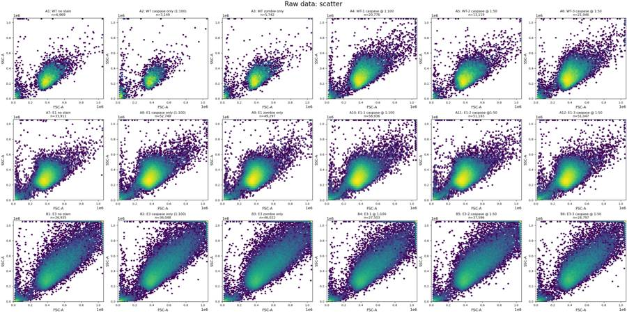
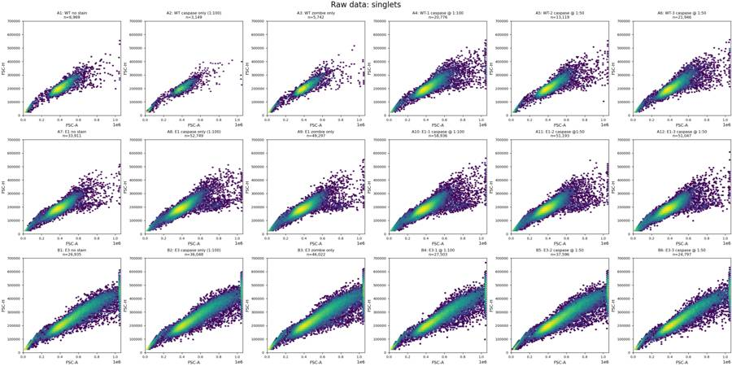
tool call · exec
const r=await Promise.allSettled([tools.view_image({path:"/task/outputs/exploration_time.png"}),tools.view_image({path:"/task/outputs/exploration_fluorescence.png"}),tools.view_image({path:"/task/outputs/exploration_histograms.png"})]);for(const x of r){if(x.status==="fulfilled")image(x.value.image_url);else text(x);}
tool output
Script completed Wall time 0.1 seconds Output:
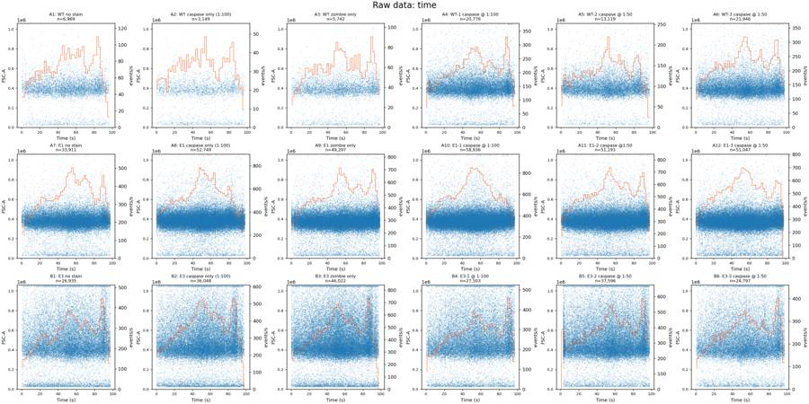
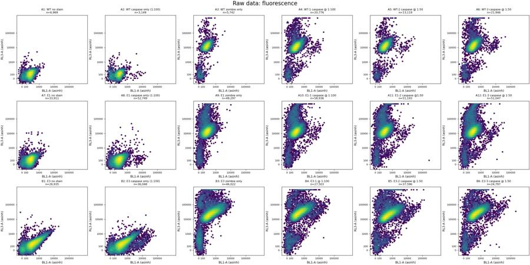
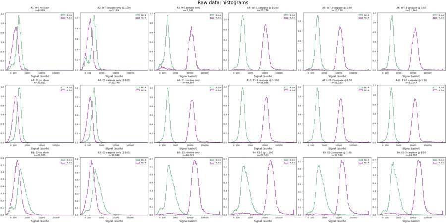
tool call · exec
text(await tools.apply_patch("*** Begin Patch\n*** Add File: /task/outputs/analyse_plate.py\n+\"\"\"Reproducible analysis of EXP22004082. All gates and counts use FlowKit 1.2.3.\"\"\"\n+from pathlib import Path\n+import json\n+import numpy as np\n+import pandas as pd\n+import matplotlib\n+matplotlib.use('Agg')\n+import matplotlib.pyplot as plt\n+import flowkit as fk\n+\n+ROOT=Path('/task')\n+OUT=ROOT/'outputs'\n+LAYOUT=pd.read_csv(ROOT/'inputs/plate_layout.csv')\n+SAMPLES={r.well:fk.Sample(str(ROOT/'inputs/raw'/r.file)) for r in LAYOUT.itertuples()}\n+\n+def dim(ch,lo=None,hi=None):\n+ return fk.Dimension(ch,compensation_ref='uncompensated',range_min=lo,range_max=hi)\n+\n+CELL_VERTICES=[(180000,80000),(300000,80000),(1000000,300000),\n+ (1000000,1000000),(250000,1000000),(180000,300000)]\n+SINGLET_VERTICES=[(180000,80000),(1000000,350000),(1000000,570000),(180000,132000)]\n+\n+def build_strategy(live_cut=60000,marker_cut=1000):\n+ g=fk.GatingStrategy()\n+ g.add_gate(fk.gates.PolygonGate('cells',[dim('FSC-A'),dim('SSC-A')],CELL_VERTICES),('root',))\n+ g.add_gate(fk.gates.PolygonGate('singlets',[dim('FSC-A'),dim('FSC-H')],SINGLET_VERTICES),('root','cells'))\n+ g.add_gate(fk.gates.RectangleGate('live',[dim('RL3-A',hi=live_cut)]),('root','cells','singlets'))\n+ g.add_gate(fk.gates.RectangleGate('caspase_positive',[dim('BL1-A',lo=marker_cut)]),('root','cells','singlets','live'))\n+ return g\n+\n+def save_counts(g):\n+ with open(OUT/'gates.xml','wb') as h: fk.export_gatingml(g,h)\n+ g=fk.parse_gating_xml(str(OUT/'gates.xml'))\n+ counts=[]\n+ results={}\n+ for r in LAYOUT.itertuples():\n+ s=SAMPLES[r.well]\n+ result=g.gate_sample(s)\n+ results[r.well]=result\n+ nums={'all_events':s.event_count}\n+ counts.append([r.file,r.well,'all_events','other','none',s.event_count,np.nan])\n+ for name,role,parent in [('cells','cells','all_events'),('singlets','singlets','cells'),\n+ ('live','live','singlets'),('caspase_positive','marker_positive','live')]:\n+ nums[name]=int(result.get_gate_count(name))\n+ counts.append([r.file,r.well,name,role,parent,nums[name],100*nums[name]/nums[parent] if nums[parent] else np.nan])\n+ pd.DataFrame(counts,columns=['file','well','population','role','parent','count','pct_of_parent']).to_csv(OUT/'counts.csv',index=False)\n+ return g,results\n+\n+if __name__=='__main__':\n+ g,results=save_counts(build_strategy())\n+ rows=[]\n+ for r in LAYOUT.itertuples():\n+ s=SAMPLES[r.well]\n+ e=s.get_events(source='raw')\n+ d=dict(well=r.well,sample=r.sample)\n+ for pop in ['cells','singlets','live','caspase_positive']:\n+ d[pop]=results[r.well].get_gate_count(pop)\n+ d['positive_pct']=100*d['caspase_positive']/d['live']\n+ for pop in ['singlets','live']:\n+ gated=e[results[r.well].get_gate_membership(pop)]\n+ for ch in ['BL1-A','RL3-A','FSC-W']:\n+ for p in [1,10,50,90,95,98,99,99.5]:\n+ d[f'{pop}_{ch}_q{p}']=np.percentile(gated[:,s.pnn_labels.index(ch)],p)\n+ rows.append(d)\n+ pd.DataFrame(rows).to_csv(OUT/'gated_diagnostics.csv',index=False)\n+ print(pd.DataFrame(rows)[['well','cells','singlets','live','caspase_positive','positive_pct','singlets_RL3-A_q50','live_BL1-A_q99','live_BL1-A_q99.5']].to_string(index=False))\n+ for mode in ['singlet_fluorescence','live_BL1','singlet_RL3','width']:\n+ fig,axs=plt.subplots(3,6,figsize=(24,12),constrained_layout=True)\n+ for ax,r in zip(axs.flat,LAYOUT.itertuples()):\n+ s=SAMPLES[r.well]\n+ pop='live' if mode=='live_BL1' else 'singlets'\n+ e=s.get_events(source='raw')[results[r.well].get_gate_membership(pop)]\n+ ch=lambda c:e[:,s.pnn_labels.index(c)]\n+ if mode=='singlet_fluorescence':\n+ ax.hexbin(np.arcsinh(ch('BL1-A')/150),np.arcsinh(ch('RL3-A')/150),gridsize=65,bins='log',mincnt=1,cmap='viridis',extent=(-1,10,-1,10))\n+ ticks=np.array([0,100,1000,10000,100000])\n+ ax.set(xticks=np.arcsinh(ticks/150),xticklabels=ticks,yticks=np.arcsinh(ticks/150),yticklabels=ticks,xlim=(-.8,10),ylim=(-.8,10),xlabel='BL1-A (asinh)',ylabel='RL3-A (asinh)')\n+ ax.axvline(np.arcsinh(1000/150),color='red',lw=1)\n+ ax.axhline(np.arcsinh(60000/150),color='red',lw=1)\n+ elif mode in ['live_BL1','singlet_RL3']:\n+ c='BL1-A' if mode=='live_BL1' else 'RL3-A'\n+ ax.hist(ch(c),bins=np.geomspace(10,1050000,140),histtype='step',color='seagreen' if c=='BL1-A' else 'purple')\n+ ax.set(xscale='log',xlim=(10,1050000),xlabel=c)\n+ ax.axvline(1000 if c=='BL1-A' else 60000,color='red',lw=1)\n+ else:\n+ ax.hexbin(ch('FSC-H'),ch('FSC-W'),gridsize=70,bins='log',mincnt=1,cmap='viridis')\n+ ax.set(xlim=(0,700000),ylim=(40,240),xlabel='FSC-H',ylabel='FSC-W')\n+ ax.set_title(f'{r.well}: {r.sample}\\n{pop}, n={len(e):,}',fontsize=9)\n+ ax.tick_params(labelsize=8)\n+ fig.savefig(OUT/f'exploration_{mode}.png',dpi=130)\n+ plt.close(fig)\n*** End Patch"));
text(await tools.exec_command({cmd:"python /task/outputs/analyse_plate.py","max_output_tokens":4000,"yield_time_ms":1000}));
tool output
Script completed
Wall time 1.2 seconds
Output:
{}
{"chunk_id":"df3462","wall_time_seconds":1.000350436,"session_id":25745,"original_token_count":0,"output":""}10
agent
E3 has broader scatter and higher BL1 background even without the caspase antibody. I’ll use the Zombie-only controls to measure that background before comparing cell lines. The acquisition traces show a similar rate pattern across the plate, with no obvious well-specific clog or early dry-out.
tool call · exec
text(await tools.write_stdin({session_id:25745,chars:"","yield_time_ms":1000,"max_output_tokens":4000}));
const r=await Promise.allSettled([tools.view_image({path:"/task/outputs/exploration_singlet_fluorescence.png"}),tools.view_image({path:"/task/outputs/exploration_live_BL1.png"}),tools.view_image({path:"/task/outputs/exploration_singlet_RL3.png"})]);for(const x of r){if(x.status==="fulfilled")image(x.value.image_url);else text(x);}
tool output
Script completed Wall time 0.0 seconds Output:
{"chunk_id":"23dd7a","wall_time_seconds":0.000003368,"exit_code":0,"original_token_count":542,"output":"well cells singlets live caspase_positive positive_pct singlets_RL3-A_q50 live_BL1-A_q99 live_BL1-A_q99.5\n A1 6371 6263 6263 12 0.191601 115.0 693.18 815.010\n A2 2545 2497 2497 30 1.201442 118.0 1385.04 4067.360\n A3 5163 5087 5021 8 0.159331 12566.0 650.40 733.900\n A4 19704 19208 18961 180 0.949317 11228.5 967.60 1757.200\n A5 12596 12320 12191 143 1.172996 12512.0 1060.90 3344.950\n A6 21036 20552 20155 243 1.205656 13635.0 1107.84 3555.820\n A7 32541 31857 31857 66 0.207176 120.0 673.44 789.000\n A8 51061 49663 49663 193 0.388619 117.0 750.00 918.690\n A9 47454 46248 45197 89 0.196916 13175.0 658.04 794.000\n A10 56901 55256 53996 228 0.422254 12768.5 764.05 932.025\n A11 49105 47810 46738 193 0.412940 13479.0 784.00 938.315\n A12 48557 47282 45952 278 0.604979 13260.0 820.49 1059.000\n B1 23202 22607 22607 2017 8.922015 181.0 1839.94 2203.940\n B2 31453 30639 30639 3889 12.692973 175.0 3395.48 6870.620\n B3 40272 39101 38117 3385 8.880552 20946.0 1902.84 2271.260\n B4 23998 23374 22427 2374 10.585455 25623.0 3325.44 6497.360\n B5 33598 32667 31826 4184 13.146484 18006.0 2604.00 5638.250\n B6 22047 21504 20719 2548 12.297891 24339.5 2642.82 5529.150\n"}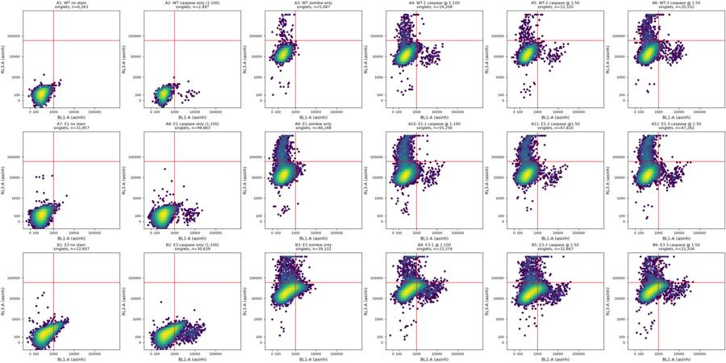
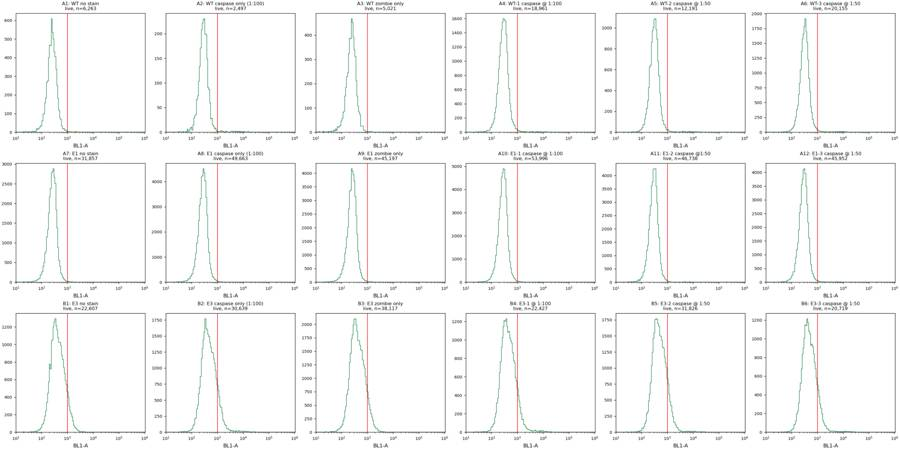
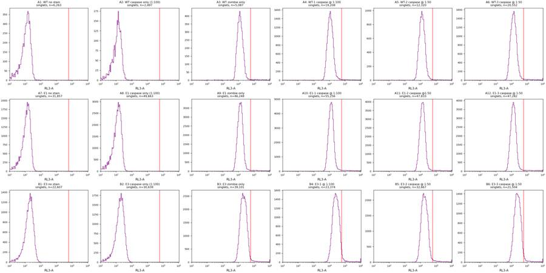
tool call · exec
image((await tools.view_image({path:"/task/outputs/exploration_width.png"})).image_url);
text(await tools.exec_command({cmd:"python - <<'PY'\nimport sys\nsys.path.insert(0,'/task/outputs')\nfrom analyse_plate import *\ng=build_strategy()\nfor ch,name in [('FSC-A','FSC_saturated'),('SSC-A','SSC_saturated'),('BL1-A','BL1_saturated'),('RL3-A','RL3_saturated')]:\n g.add_gate(fk.gates.RectangleGate(name,[dim(ch,lo=1048575)]),('root',))\nfor ch,name in [('FSC-A','FSC_near_top'),('SSC-A','SSC_near_top')]:\n g.add_gate(fk.gates.RectangleGate(name,[dim(ch,lo=1000000)]),('root',))\nfor lo,hi,name in [(0,5,'start'),(5,20,'early'),(20,40,'early_mid'),(40,60,'mid'),(60,80,'late_mid'),(80,95,'late'),(95,99,'end')]:\n g.add_gate(fk.gates.RectangleGate(name,[dim('Time',lo,hi)]),('root',))\nrows=[]\nfor r in LAYOUT.itertuples():\n s=SAMPLES[r.well]; res=g.gate_sample(s); e=s.get_events(source='raw')\n row={'well':r.well,'all_events':s.event_count}\n for name in ['FSC_saturated','SSC_saturated','BL1_saturated','RL3_saturated','FSC_near_top','SSC_near_top']:\n row[name]=int(res.get_gate_count(name));row[name+'_pct']=100*row[name]/s.event_count\n for name in ['start','early','early_mid','mid','late_mid','late','end']:\n mask=res.get_gate_membership(name); v=e[mask]; row[name+'_n']=res.get_gate_count(name)\n row[name+'_fsc_med']=np.median(v[:,1]);row[name+'_BL1_med']=np.median(v[:,3]);row[name+'_RL3_med']=np.median(v[:,4])\n rows.append(row)\npd.DataFrame(rows).to_csv(OUT/'qc_exploration.csv',index=False)\nprint(pd.DataFrame(rows)[['well','all_events','FSC_saturated','FSC_saturated_pct','SSC_saturated','SSC_saturated_pct','BL1_saturated','RL3_saturated','start_n','early_n','late_n','end_n']].to_string(index=False))\nprint('Metadata signatures')\nfor r in LAYOUT.itertuples():\n s=SAMPLES[r.well]\n print(r.well,s.metadata['vol'],s.metadata.get('lost'),s.metadata.get('#flowrate'),s.metadata['wellid'],s.metadata['p4v'],s.metadata['p5v'])\nPY","max_output_tokens":5000}));
tool output
Script completed Wall time 2.3 seconds Output:
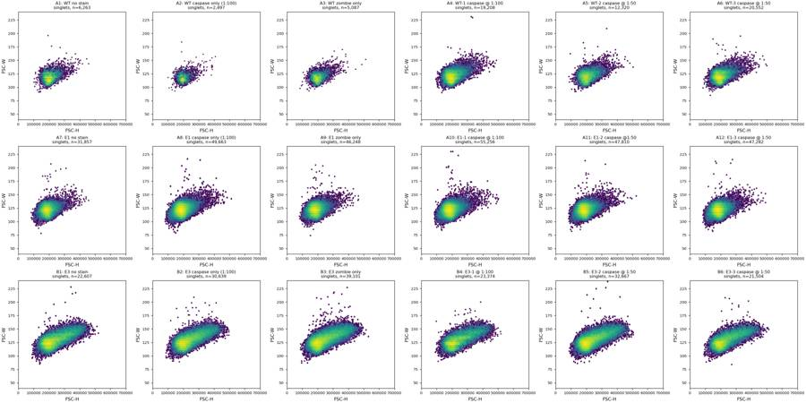
{"chunk_id":"7584f6","wall_time_seconds":2.073517442,"exit_code":0,"original_token_count":831,"output":"well all_events FSC_saturated FSC_saturated_pct SSC_saturated SSC_saturated_pct BL1_saturated RL3_saturated start_n early_n late_n end_n\n A1 6969 9 0.129143 12 0.172191 0 0 192 874 1143 56\n A2 3149 3 0.095268 12 0.381073 0 0 121 405 488 40\n A3 5742 9 0.156740 14 0.243817 0 6 130 710 987 108\n A4 20776 67 0.322487 46 0.221409 0 19 620 2399 3577 296\n A5 13119 18 0.137206 18 0.137206 0 17 447 1710 1979 127\n A6 21946 38 0.173152 28 0.127586 0 41 544 2653 3745 506\n A7 33911 17 0.050131 33 0.097314 0 0 773 3782 5409 696\n A8 52749 35 0.066352 52 0.098580 0 0 1812 6646 7060 857\n A9 49297 36 0.073027 43 0.087226 0 35 1308 5767 8704 1282\n A10 58936 59 0.100109 56 0.095018 0 62 1915 7325 8019 1067\n A11 51193 38 0.074229 50 0.097670 0 74 1304 6295 8632 847\n A12 51047 30 0.058769 47 0.092072 0 83 1421 6204 7804 1390\n B1 26935 786 2.918136 973 3.612400 0 0 643 2836 4904 470\n B2 36048 1054 2.923879 1198 3.323347 0 0 1037 3885 5951 551\n B3 46022 1692 3.676503 1830 3.976359 0 148 1297 4957 7876 664\n B4 27503 940 3.417809 1004 3.650511 0 130 663 2964 5077 530\n B5 37596 1355 3.604107 1450 3.856793 0 138 1174 4158 6711 990\n B6 24797 676 2.726136 818 3.298786 0 94 595 2603 4521 465\nMetadata signatures\nA1 164000 0 100 A1 250 350\nA2 163000 0 100 A2 250 350\nA3 162000 0 100 A3 250 350\nA4 162000 0 100 A4 250 350\nA5 162000 0 100 A5 250 350\nA6 164000 0 100 A6 250 350\nA7 164000 0 100 A7 250 350\nA8 164000 0 100 A8 250 350\nA9 164000 0 100 A9 250 350\nA10 164000 0 100 A10 250 350\nA11 162000 0 100 A11 250 350\nA12 164000 0 100 A12 250 350\nB1 162000 0 100 B1 250 350\nB2 164000 0 100 B2 250 350\nB3 164000 0 100 B3 250 350\nB4 162000 0 100 B4 250 350\nB5 164000 0 100 B5 250 350\nB6 162000 0 100 B6 250 350\n"}tool call · exec
text(await tools.exec_command({cmd:"python - <<'PY'\nimport sys\nsys.path.insert(0,'/task/outputs')\nfrom analyse_plate import *\nfor cutoff in [1000,1500,2000,2500,3000,4000]:\n g=build_strategy(marker_cut=cutoff); vals={}\n for r in LAYOUT.itertuples():\n rr=g.gate_sample(SAMPLES[r.well]); vals[r.well]=100*rr.get_gate_count('caspase_positive')/rr.get_gate_count('live')\n print('\\nMarker threshold',cutoff,'FMOs', {w:round(vals[w],4) for w in ['A3','A9','B3']})\n for line,wells,ctrl in [('WT',['A4','A5','A6'],'A3'),('E1',['A10','A11','A12'],'A9'),('E3',['B4','B5','B6'],'B3')]:\n print(line,'raw', [round(vals[w],4) for w in wells],'adjusted',[round(vals[w]-vals[ctrl],4) for w in wells])\nPY","max_output_tokens":4000}));
tool output
Script completed
Wall time 2.6 seconds
Output:
{"chunk_id":"5aa39a","wall_time_seconds":2.460776615,"exit_code":0,"original_token_count":397,"output":"\nMarker threshold 1000 FMOs {'A3': 0.1593, 'A9': 0.1969, 'B3': 8.8806}\nWT raw [0.9493, 1.173, 1.2057] adjusted [0.79, 1.0137, 1.0463]\nE1 raw [0.4223, 0.4129, 0.605] adjusted [0.2253, 0.216, 0.4081]\nE3 raw [10.5855, 13.1465, 12.2979] adjusted [1.7049, 4.2659, 3.4173]\n\nMarker threshold 1500 FMOs {'A3': 0.0, 'A9': 0.0487, 'B3': 2.4635}\nWT raw [0.5643, 0.6644, 0.7293] adjusted [0.5643, 0.6644, 0.7293]\nE1 raw [0.2074, 0.2225, 0.3417] adjusted [0.1587, 0.1738, 0.293]\nE3 raw [3.6741, 4.2418, 3.8033] adjusted [1.2107, 1.7783, 1.3398]\n\nMarker threshold 2000 FMOs {'A3': 0.0, 'A9': 0.0111, 'B3': 0.8238}\nWT raw [0.4536, 0.5742, 0.6351] adjusted [0.4536, 0.5742, 0.6351]\nE1 raw [0.1685, 0.199, 0.2829] adjusted [0.1575, 0.1879, 0.2718]\nE3 raw [2.011, 1.9104, 1.7858] adjusted [1.1872, 1.0866, 0.962]\n\nMarker threshold 2500 FMOs {'A3': 0.0, 'A9': 0.0044, 'B3': 0.3122}\nWT raw [0.4061, 0.5414, 0.5855] adjusted [0.4061, 0.5414, 0.5855]\nE1 raw [0.1519, 0.1776, 0.2655] adjusted [0.1474, 0.1732, 0.2611]\nE3 raw [1.4135, 1.1154, 1.1053] adjusted [1.1013, 0.8032, 0.7931]\n\nMarker threshold 3000 FMOs {'A3': 0.0, 'A9': 0.0, 'B3': 0.1548}\nWT raw [0.3639, 0.5168, 0.5458] adjusted [0.3639, 0.5168, 0.5458]\nE1 raw [0.1315, 0.1647, 0.2416] adjusted [0.1315, 0.1647, 0.2416]\nE3 raw [1.1281, 0.8075, 0.8591] adjusted [0.9733, 0.6527, 0.7043]\n\nMarker threshold 4000 FMOs {'A3': 0.0, 'A9': 0.0, 'B3': 0.0446}\nWT raw [0.2742, 0.4676, 0.4763] adjusted [0.2742, 0.4676, 0.4763]\nE1 raw [0.1111, 0.1498, 0.2067] adjusted [0.1111, 0.1498, 0.2067]\nE3 raw [0.8695, 0.6378, 0.6757] adjusted [0.8249, 0.5932, 0.6311]\n"}tool call · exec
text(await tools.exec_command({cmd:"python - <<'PY'\nimport sys\nsys.path.insert(0,'/task/outputs')\nfrom analyse_plate import *\ng=build_strategy(marker_cut=2500)\nfor pop in ['FMO_near_marker','marker_strong']:\n g.add_gate(fk.gates.RectangleGate(pop,[dim('BL1-A',lo=1500 if pop=='FMO_near_marker' else 2500)]),('root','cells','singlets','live'))\nfor r in LAYOUT.itertuples():\n if r.well not in ['A3','A9','B3','A4','A10','B4']: continue\n s=SAMPLES[r.well];res=g.gate_sample(s)\n for pop in ['live','marker_strong']:\n e=s.get_events(source='raw')[res.get_gate_membership(pop)]\n print(r.well,pop,len(e),'FSC',np.median(e[:,1]) if len(e) else None,'SSC',np.median(e[:,2]) if len(e) else None,'BL1',np.median(e[:,3]) if len(e) else None,'RL3',np.median(e[:,4]) if len(e) else None)\nPY","max_output_tokens":2000}));
text(await tools.web__run({search_query:[{q:'site.abcam.com camptothecin apoptosis H4 24 h caspase'},{q:'site.biolegend.com Zombie NIR 423105 live cells staining dilution 1 200'}],response_length:"long"}));
tool output
Script completed
Wall time 2.6 seconds
Output:
{"chunk_id":"ec2cc3","wall_time_seconds":1.652443565,"exit_code":0,"original_token_count":194,"output":"A3 live 5021 FSC 397763.0 SSC 267402.0 BL1 244.0 RL3 12486.0\nA3 marker_strong 0 FSC None SSC None BL1 None RL3 None\nA4 live 18961 FSC 402612.0 SSC 284055.0 BL1 289.0 RL3 11155.0\nA4 marker_strong 77 FSC 364979.0 SSC 226567.0 BL1 5724.0 RL3 9680.0\nA9 live 45197 FSC 378694.0 SSC 294061.0 BL1 256.0 RL3 13020.0\nA9 marker_strong 2 FSC 680984.5 SSC 569959.5 BL1 2880.0 RL3 31342.0\nA10 live 53996 FSC 379752.5 SSC 294360.0 BL1 279.0 RL3 12624.0\nA10 marker_strong 82 FSC 409875.5 SSC 230480.0 BL1 5597.0 RL3 12508.5\nB3 live 38117 FSC 470303.0 SSC 387488.0 BL1 392.0 RL3 20610.0\nB3 marker_strong 119 FSC 821322.0 SSC 794723.0 BL1 2991.0 RL3 36399.0\nB4 live 22427 FSC 473403.0 SSC 377437.0 BL1 423.0 RL3 24988.0\nB4 marker_strong 317 FSC 504666.0 SSC 393269.0 BL1 4816.0 RL3 27206.0\n"}
BioLegend®Version: 7 Revision Date: 12/18/2024Zombie NIR™ Fixable Viability Kit423105 / 100 tests (https://www.biolegend.com/en-us/products/zombie-nir-fixable-viability-kit-8657?displayInline=true&filename=Zombie+NIR%E2%84%A2+Fixable+Viability+Kit.pdf&leftRightMargin=15&pdf=true&topBottomMargin=15&v=20230525063016)
citeturn1search12 [wordlim: 200] Published: 7 months ago; BioLegend®Version: 7 Revision Date: 12/18/2024Zombie NIR™ Fixable Viability Kit423105 / 100 tests
423106 / 500 testsCatalog# / SizeRUORegulatory StatusFixable Dye, Fixable Viability Dye, Dead, ApoptosisOther NamesZombie NIR™ is an amine reactive fluorescent dye that is non-permeant to live cells, but ... preferably in a desiccator or in a container with a tight cap; do not store in the freezer.Storage & HandlingFC - Quality testedApplicationEach lot of this product is quality control tested by immunofluorescent staining with flow cytometric analysis.Recommended UsageFor flow cytometry, the suggested dilution is 1:100-1:1000 for 1-10 million cells. ... Wash one time with 2 mL BioLegend’s Cell Staining Buffer (Cat.
BioLegend®Version: 7 Revision Date: 12/18/2024Zombie NIR™ Fixable Viability Kit423105 / 100 tests
423106 / 500 testsCatalog# / SizeRUORegulatory StatusFixable Dye, Fixable Viability Dye, Dead, ApoptosisOther NamesZombie NIR™ is an amine reactive fluorescent dye that is non-permeant to live cells, but
permeant to the cells with compromised membranes. Thus, it can be used to assess live vs.
dead status of mammalian cells. Zombie NIR™ is a polar water soluble dye, providing red
fluorescence, making it suitable for multi-color detection.DescriptionProduct DetailsZombie NIR™ Fixable Viability kit is composed of lyophilized Zombie NIR™ dye and anhydrous
DMSO. For reconstitution, bring the kit to room temperature; add 100 µl of DMSO to one vial of
Zombie NIR™ dye until fully dissolved. 100 tests = 1 vial of Zombie NIR™ + DMSO, 500 tests = 5
vials of Zombie NIR™ + DMSO.PreparationStore kit at -20°C upon receipt. Do not open vials until needed. Once the DMSO is added to the
Zombie NIR™ dye, use immediately, or store at -20°C in a dry place and protected from light,
preferably in a desiccator or in a container with a tight cap; do not store in the freezer.Storage & HandlingFC - Quality testedApplicationEach lot of this product is quality control tested by immunofluorescent staining with flow cytometric analysis.Recommended UsageFor flow cytometry, the suggested dilution is 1:100-1:1000 for 1-10 million cells. It is recommended
that the reagent be titrated for optimal performance for each application, as optimal dosage varies
with cell type.Red Laser (633 nm)Excitation LaserZombie NIR™ dye is excited by the red laser and has fluorescence emission maximum at 746 nm.
If using in a multi-color panel design, filter optimization may be required depending on other fluorophores used. Zombie NIR™ dye has similar emission to APC/Cyanine7.Application NotesStandard Cell Staining Protocol1. Prior to reconstitution, spin down the vial of lyophilized reagent in a microcentrifuge to
ensure the reagent is at the bottom of the vial.
2. For reconstitution, pre-warm the kit to room temperature; add 100 µL of DMSO to one vial
of Zombie NIR™ dye and mix until fully dissolved
3. Wash cells with PBS buffer (no Tris buffer and protein free).
4. Dilute Zombie NIR™ dye at 1:100–1000 in PBS. Resuspend 1-10 x 10^6 cells in diluted
100 µL Zombie NIR™ solution. To minimize background staining of live cells, titrate the
amount of dye and/or number of cells per 100 µL for optimal performance. Different cell
types can have a wide degree of variability in staining based on cell size and degree of
cell death.1. Note: Don’t use Tris buffer as a diluent and be sure that the PBS does not contain any other protein like BSA or FBS.
2. Note: The amount of dye used can also influence the ability to detect apoptotic as well as live and dead cells.5. Incubate the cells at room temperature (or 4°C), in the dark, for 15-30 minutes.
6. Wash one time with 2 mL BioLegend’s Cell Staining Buffer (Cat. No. 420201) or equivalent buffer containing serum or BSA.
7. Continue performing antibody staining procedure as desired.
8. Cells can be fixed with paraformaldehyde or methanol prior to permeabilization or can be analyzed without fixation.--------------------------------------------------------------------------------
BioLegend
From RevvityZombie DyesFixable live/dead (https://www.biolegend.com/Files/Images/BioLegend/literature/images/07-0175-01_Zombie_Dyes_Info_Sheet.pdf)
citeturn1search13 [wordlim: 200] Published: 7 months ago; Zombie NIR™ Fixable Viability Kit | APC/Cyanine7 | 716 nm | 746 nm | 423105 | 423106Flow Cytometry DataHeat-killed (mixed 1:1 with live) C57BL/6 mouse splenocytes were stained with indicated Zombie Dye and ... Cells alone, without Zombie Dye staining, are indicated
in black.BioLegend is a registered trademark of BioLegend, Inc.
Zombie R718™ Fixable Viability Kit | Spark Red™ 718 | 697 nm | 711 nm
… [23,889 more characters not shown]tool call · exec
text(await tools.web__run({search_query:[{q:'"H4" "camptothecin" "caspase" cells apoptosis'},{q:'"H4" "camptothecin" µM apoptosis'},{q:'site.abcam.com camptothecin ab120115 apoptosis'}],response_length:"long"}));
text(await tools.exec_command({cmd:"python - <<'PY'\nfrom pathlib import Path\nimport json\nm=json.loads(Path('/task/outputs/fcs_metadata.json').read_text())\nprint('spillover identical identity',len(set(v['spillover'] for v in m.values())))\nimport pandas as pd\nr=pd.read_csv('/task/outputs/qc_exploration.csv')\nprint(r[['well','early_fsc_med','mid_fsc_med','late_fsc_med','early_BL1_med','mid_BL1_med','late_BL1_med','early_RL3_med','mid_RL3_med','late_RL3_med']].to_string(index=False))\nPY","max_output_tokens":3000}));
tool output
Script completed Wall time 1.1 seconds Output: Tips for apoptosis assays (https://docs.abcam.com/pdf/kits/apoptosis-analysis-guide.pdf) citeturn2search12 [wordlim: 200] Published: 3.3 years ago; <tr><td>Camptothecin (ab120115)</td><td>DNA topoisomerase inhibitor</td></tr> ... <tr><td>Pifithrin-μ (ab120886)</td><td>Inhibitor of p53-mediated apoptosis</td></tr> Tips for apoptosis assays There are several factors that can affect how successfully your assays will be for detecting apoptosis. **Using apoptosis inducers and inhibitors** The use of activators or inhibitors for specific steps of the apoptosis cascade is essential for providing positive and negative controls. These ensure that the assay worked and confirm that apoptosis is occurring. The table below highlights some known apoptotic inducers and inhibitors for functions linked to cell death. Table 4. Highlighted apoptosis inducer and inhibitor compounds. <table id="e1"> <tr><th>Apoptosis inducers</th><th>Biological description</th></tr> <tr><td>Apoptosis Activator 2 (AAII) (ab141227)</td><td>Cytochrome c, caspase activator, and apoptosis inducer</td></tr> <tr><td>Cycloheximide (ab120093)</td><td>Protein synthesis inhibitor</td></tr> <tr><td>Mitomycin C (MMC) (ab120797)</td><td>Anticancer and antibiotic agent</td></tr> <tr><td>Oxaliplatin (ab141054)</td><td>Platinum anticancer agent. Induces DNA cross-linking</td></tr> <tr><td>CPT 11 (Irinotecan) (ab141107)</td><td>Potent DNA topoisomerase I inhibitor</td></tr> <tr><td>Camptothecin (ab120115)</td><td>DNA topoisomerase inhibitor</td></tr> <tr><td>Staurosporine (ab120056)</td><td>Protein kinase inhibitor</td></tr> <tr><th>Apoptosis inhibitors</th><th></th></tr> <tr><td>z-VAD-(OMe)-FMK (ab120487)</td><td>Cell permeable, irreversible general caspase inhibitor</td></tr> <tr><td>z-D(OMe)E(OMe)VD(OMe)-FMK (ab120488)</td><td>Cell permeable caspase-3 inhibitor</td></tr> <tr><td>z-IETD-FMK (ab141382)</td><td>Caspase-8 inhibitor</td></tr> <tr><td>Pifithrin-μ (ab120886)</td><td>Inhibitor of p53-mediated apoptosis</td></tr> </table>-------------------------------------------------------------------------------- Altered Processing of Amyloid Precursor Protein in Cells Undergoing Apoptosis (https://pmc.ncbi.nlm.nih.gov/articles/PMC3585261/) citeturn2search0 [wordlim: 200] Published: 13.7 years ago; Crawled: last month; In order to examine the proteolytic processing of APP during apoptosis, we treated H4 neuroglioma cells expressing human APP (H4-APP cells) with the DNA damaging agent camptothecin (CPT), a topoisomerase inhibitor [ref-type: bibr] [25] [Source reference: [Source link 25]], [ref-type: bibr] [26] [Source reference: [Source link 26]]. ... Analysis of the cell lysate with caspase-cleaved APP antibody revealed the formation of an ∼25 kDa fragment under apoptotic conditions, the levels of which were attenuated in the presence of caspase inhibitors. ## Results ### DNA damaging agents induce apoptosis in H4-APP neuroglioma cells In order to examine the proteolytic processing of APP during apoptosis, we treated H4 neuroglioma cells expressing human APP (H4-APP cells) with the DNA damaging agent camptothecin (CPT), a topoisomerase inhibitor [ref-type: bibr] [25] [Source reference: [Source link 25]], [ref-type: bibr] [26] [Source reference: [Source link 26]]. Cells were synchronized by serum starvation for 48 hours, then serum stimulated in the presence of 10 µM CPT for zero to six hours. Apoptosis induction was assessed by flow cytometry, light microscopy, and western blot analyses. Cellular shrinkage, nuclear condensation, and detachment, characteristics of cells undergoing apoptosis, were observed after three hours of CPT treatment and were more pronounced after six hours ([ref-type: fig] Figure 1A [Source reference: [Source link 27]]). Flow cytometric analysis of propidium iodide stained cells revealed a significant increase in the number of cells with sub-G1 DNA content, indicative of apoptosis ([ref-type: fig] Figure 1B and 1C [Source reference: [Source link 28]], control and CPT treated respectively). Quantification indicated that CPT treatment induced apoptosis in approximately 78% of cells after six hours ([ref-type: fig] Figure 1D [Source reference: [Source link 29]]). Since DNA damage induced apoptosis has been associated with p53-dependent mechanisms [ref-type: bibr] [27] [Source reference: [Source link 30]]–[ref-type: bibr] [29] [Source reference: [Source link 31]], we examined whether the CPT-mediated cell death in H4 cells was associated with an induction of p53. Western blot analysis of the lysates from H4-APP cells treated with CPT showed a time-dependent increase in p53 levels, suggesting that the cell death we observed is p53-dependent ([ref-type: fig] Figure 1E [Source reference: [Source link 32]], top panel). Next, we examined the levels of poly-ADP ribose polymerase (PARP), an enzyme involved in several cellular functions including DNA repair, cell cycle progression, and cell death [ref-type: bibr] [30] [Source reference: [Source link 33]], [ref-type: bibr] [31] [Source reference: [Source link 34]], in cells treated with CPT. PARP is an approximately 116 kDa protein which, under apoptotic conditions, gets cleaved by caspases to generate fragments of approximately 89 kDa and 24 kDa [ref-type: bibr] [32] [Source reference: [Source link 35]]. Analysis of the cell lysates from H4-APP cells treated with CPT showed that the levels of full length PARP were reduced over the time course. This was associated with the appearance of a lower band of ∼89 kDa, indicating caspase-mediated PARP cleavage was associated with the induction of apoptosis upon CPT treatment ([ref-type: fig] Figure 1E [Source reference: [Source link 36]] middle panel). Normalization for protein loading was done using an antibody against β-actin ([ref-type: fig] Figure 1E [Source reference: [Source link 37]], bottom panel). [ref-type: fig] Figure 1F [Source reference: [Source link 38]] shows the qua … [25,431 more characters not shown]
15
agent
A small BL1-bright population appears above background in the stained wells. After subtracting each cell line’s Zombie-only control, E1 is lower than WT and E3 is higher, so this plate does not show a consistent PGRN-knockout increase. I’ll check how sensitive those comparisons are to the gate boundaries before making the recommendation.
tool call · exec
text(await tools.exec_command({cmd:"date -u +%FT%TZ\nls -lh /task/outputs","max_output_tokens":2000}));
text(await tools.apply_patch("*** Begin Patch\n*** Update File: /task/outputs/analyse_plate.py\n@@\n-def build_strategy(live_cut=60000,marker_cut=1000):\n+POPULATIONS=[\n+ ('cells','cells','all_events'),\n+ ('singlets','singlets','cells'),\n+ ('live','live','singlets'),\n+ ('caspase_positive','marker_positive','live'),\n+ ('nonlive','other','singlets'),\n+ ('caspase_positive_nonlive','other','nonlive'),\n+ ('caspase_positive_singlets','other','singlets'),\n+ ('qc_FSC_saturated','other','all_events'),\n+ ('qc_SSC_saturated','other','all_events'),\n+ ('qc_BL1_saturated','other','all_events'),\n+ ('qc_RL3_saturated','other','all_events'),\n+ ('live_40000','other','singlets'),\n+ ('caspase_positive_live40000','other','live_40000'),\n+ ('live_80000','other','singlets'),\n+ ('caspase_positive_live80000','other','live_80000'),\n+ ('caspase_positive_BL1_2000','other','live'),\n+ ('caspase_positive_BL1_3000','other','live'),\n+ ('caspase_positive_BL1_4000','other','live'),\n+]\n+\n+def build_strategy(live_cut=60000,marker_cut=2500,diagnostics=True):\n@@\n g.add_gate(fk.gates.RectangleGate('caspase_positive',[dim('BL1-A',lo=marker_cut)]),('root','cells','singlets','live'))\n+ if diagnostics:\n+ p=('root','cells','singlets')\n+ g.add_gate(fk.gates.RectangleGate('nonlive',[dim('RL3-A',lo=live_cut)]),p)\n+ g.add_gate(fk.gates.RectangleGate('caspase_positive_nonlive',[dim('BL1-A',lo=marker_cut)]),p+('nonlive',))\n+ g.add_gate(fk.gates.RectangleGate('caspase_positive_singlets',[dim('BL1-A',lo=marker_cut)]),p)\n+ for ch,name in [('FSC-A','FSC'),('SSC-A','SSC'),('BL1-A','BL1'),('RL3-A','RL3')]:\n+ g.add_gate(fk.gates.RectangleGate(f'qc_{name}_saturated',[dim(ch,lo=1048575)]),('root',))\n+ for cut in [40000,80000]:\n+ g.add_gate(fk.gates.RectangleGate(f'live_{cut}',[dim('RL3-A',hi=cut)]),p)\n+ g.add_gate(fk.gates.RectangleGate(f'caspase_positive_live{cut}',[dim('BL1-A',lo=marker_cut)]),p+(f'live_{cut}',))\n+ for cut in [2000,3000,4000]:\n+ g.add_gate(fk.gates.RectangleGate(f'caspase_positive_BL1_{cut}',[dim('BL1-A',lo=cut)]),p+('live',))\n return g\n@@\n- for name,role,parent in [('cells','cells','all_events'),('singlets','singlets','cells'),\n- ('live','live','singlets'),('caspase_positive','marker_positive','live')]:\n+ for name,role,parent in POPULATIONS:\n@@\n- ax.axvline(np.arcsinh(1000/150),color='red',lw=1)\n+ ax.axvline(np.arcsinh(2500/150),color='red',lw=1)\n@@\n- ax.axvline(1000 if c=='BL1-A' else 60000,color='red',lw=1)\n+ ax.axvline(2500 if c=='BL1-A' else 60000,color='red',lw=1)\n*** End Patch"));
tool output
Script completed
Wall time 0.1 seconds
Output:
{"chunk_id":"f9b654","wall_time_seconds":0.00000426,"exit_code":0,"original_token_count":289,"output":"2026-11-10T17:12:49Z\ntotal 8.7M\ndrwxr-xr-x 2 root root 4.0K Nov 10 17:10 __pycache__\n-rw-r--r-- 1 root root 4.9K Nov 10 17:10 analyse_plate.py\n-rw-r--r-- 1 root root 8.8K Nov 10 17:10 counts.csv\n-rw-r--r-- 1 root root 1.1M Nov 10 17:09 exploration_fluorescence.png\n-rw-r--r-- 1 root root 198K Nov 10 17:09 exploration_histograms.png\n-rw-r--r-- 1 root root 203K Nov 10 17:10 exploration_live_BL1.png\n-rw-r--r-- 1 root root 2.0M Nov 10 17:09 exploration_scatter.png\n-rw-r--r-- 1 root root 214K Nov 10 17:10 exploration_singlet_RL3.png\n-rw-r--r-- 1 root root 691K Nov 10 17:10 exploration_singlet_fluorescence.png\n-rw-r--r-- 1 root root 1.3M Nov 10 17:09 exploration_singlets.png\n-rw-r--r-- 1 root root 2.3M Nov 10 17:09 exploration_time.png\n-rw-r--r-- 1 root root 829K Nov 10 17:10 exploration_width.png\n-rw-r--r-- 1 root root 77K Nov 10 17:09 fcs_metadata.json\n-rw-r--r-- 1 root root 9.6K Nov 10 17:10 gated_diagnostics.csv\n-rw-r--r-- 1 root root 3.0K Nov 10 17:10 gates.xml\n-rw-r--r-- 1 root root 3.5K Nov 10 17:09 inspect_plate.py\n-rw-r--r-- 1 root root 6.1K Nov 10 17:10 qc_exploration.csv\n-rw-r--r-- 1 root root 12K Nov 10 17:09 raw_diagnostics.csv\n"}
{}tool call · exec
text(await tools.apply_patch("*** Begin Patch\n*** Add File: /task/outputs/make_deliverables.py\n+\"\"\"Create the final tables, charts and audit files from a single shared strategy.\n+\n+Run: python /task/outputs/make_deliverables.py\n+The separate write_report.py creates the narrative and structured decision.\n+\"\"\"\n+from analyse_plate import *\n+from scipy.stats import norm\n+from matplotlib.lines import Line2D\n+import hashlib\n+\n+plt.rcParams.update({'font.family':'DejaVu Sans','font.size':10,'axes.spines.top':False,\n+ 'axes.spines.right':False,'savefig.facecolor':'white'})\n+FMO={'WT':'A3','E1':'A9','E3':'B3'}\n+GROUPS={\n+ 'WT_1_100':['A4'],'WT_1_50':['A5','A6'],\n+ 'E1_1_100':['A10'],'E1_1_50':['A11','A12'],\n+ 'E3_1_100':['B4'],'E3_1_50':['B5','B6'],\n+}\n+COLORS={'WT':'#2868a2','E1':'#d16a25','E3':'#248b78'}\n+g,results=save_counts(build_strategy())\n+counts=pd.read_csv(OUT/'counts.csv')\n+N=counts.pivot(index='well',columns='population',values='count')\n+P=100*N.caspase_positive/N.live\n+rows=[]\n+for r in LAYOUT.itertuples():\n+ s=SAMPLES[r.well]\n+ res=results[r.well]\n+ e=s.get_events(source='raw')\n+ live=e[res.get_gate_membership('live')]\n+ pos=e[res.get_gate_membership('caspase_positive')]\n+ fmowell=FMO[r.cell_line]\n+ numerator=int(N.loc[r.well,'caspase_positive']);denominator=int(N.loc[r.well,'live'])\n+ # Wilson intervals show event-sampling uncertainty only, not biological replication.\n+ p=numerator/denominator;z=norm.ppf(.975)\n+ center=(p+z*z/(2*denominator))/(1+z*z/denominator)\n+ half=z*np.sqrt(p*(1-p)/denominator+z*z/(4*denominator**2))/(1+z*z/denominator)\n+ d=dict(file=r.file,well=r.well,sample=r.sample,cell_line=r.cell_line,\n+ all_events=int(N.loc[r.well,'all_events']),cells=int(N.loc[r.well,'cells']),\n+ singlets=int(N.loc[r.well,'singlets']),live=denominator,caspase_positive=numerator,\n+ raw_pct=P[r.well],fmo_well=fmowell,fmo_raw_pct=P[fmowell],\n+ excess_percentage_points=P[r.well]-P[fmowell],\n+ raw_pct_wilson_95_low=100*(center-half),raw_pct_wilson_95_high=100*(center+half),\n+ live_pct_singlets=100*denominator/N.loc[r.well,'singlets'],\n+ live_BL1_median=np.median(live[:,3]),live_RL3_median=np.median(live[:,4]),\n+ live_BL1_q995=np.percentile(live[:,3],99.5),\n+ positive_BL1_median=np.median(pos[:,3]) if len(pos) else np.nan,\n+ event_time_min=e[:,0].min(),event_time_max=e[:,0].max())\n+ for name in ['FSC','SSC','BL1','RL3']:\n+ d[name+'_saturation_count']=int(N.loc[r.well,f'qc_{name}_saturated'])\n+ d[name+'_saturation_pct']=100*d[name+'_saturation_count']/s.event_count\n+ rows.append(d)\n+metrics=pd.DataFrame(rows).set_index('well',drop=False)\n+metrics.to_csv(OUT/'per_well_metrics.csv',index=False)\n+\n+flags=[]\n+for r in LAYOUT.itertuples():\n+ m=metrics.loc[r.well]\n+ issue='none';ev='';decision='keep'\n+ if r.well=='A2':\n+ issue='too_few_events';decision='keep_with_note'\n+ ev=(f'{int(m.all_events)} total events; {int(m.singlets)} singlets; '\n+ f'{int(m.caspase_positive)} BL1-positive events ({m.raw_pct:.3f}% passing the live gate). '\n+ 'Low precision for a rare-positive frequency; retain as a qualitative antibody-only control, '\n+ 'not as a fully stained experimental replicate. No Zombie was applied.')\n+ if r.cell_line=='E3':\n+ issue='saturation';decision='keep_with_note'\n+ ev=(f'FSC-A has {int(m.FSC_saturation_count)}/{int(m.all_events)} events '\n+ f'({m.FSC_saturation_pct:.2f}%) at 1048575; SSC-A has '\n+ f'{int(m.SSC_saturation_count)}/{int(m.all_events)} ({m.SSC_saturation_pct:.2f}%) at 1048575. '\n+ f'The common cells gate removes the off-scale scatter tail; {int(m.live)} live-gate events remain. '\n+ 'Retain for descriptive analysis of the retained population; the excluded large/granular tail may bias E3.')\n+ flags.append([r.file,r.well,issue,ev,decision])\n+flags=pd.DataFrame(flags,columns=['file','well','issue_type','evidence','decision'])\n+flags.to_csv(OUT/'flags.csv',index=False)\n+\n+summaries=[]\n+for name,wells in GROUPS.items():\n+ line=name.split('_')[0];f=FMO[line]\n+ v=metrics.loc[wells,'excess_percentage_points']\n+ summaries.append(dict(condition=name,wells=';'.join(wells),n_wells_used=len(wells),\n+ mean=v.mean(),sd=v.std(ddof=1) if len(wells)>1 else np.nan,\n+ metric_definition='100 * caspase_positive / live (%); background-adjusted value in percentage points',\n+ normalisation_applied=f'100 * (caspase_positive(well)/live(well) - caspase_positive({f})/live({f}))'))\n+for line,controls in [('WT',[('A1','unstained'),('A2','caspase_only_1_100'),('A3','Zombie_only_FMO')]),\n+ ('E1',[('A7','unstained'),('A8','caspase_only_1_100'),('A9','Zombie_only_FMO')]),\n+ ('E3',[('B1','unstained'),('B2','caspase_only_1_100'),('B3','Zombie_only_FMO')])]:\n+ for w,typ in controls:\n+ summaries.append(dict(condition=f'{line}_{typ}',wells=w,n_wells_used=1,mean=P[w],sd=np.nan,\n+ metric_definition='100 * caspase_positive / live (% of events passing live gate; viability not inferred without Zombie)',\n+ normalisation_applied='none'))\n+summary=pd.DataFrame(summaries,columns=['condition','wells','n_wells_used','mean','sd','metric_definition','normalisation_applied'])\n+summary.to_csv(OUT/'condition_summary.csv',index=False)\n+\n+# Sensitivity analysis uses additional branches of this same exported strategy.\n+sensitivity=[]\n+variants=[('primary','caspase_positive','live'),\n+ ('BL1_2000','caspase_positive_BL1_2000','live'),\n+ ('BL1_3000','caspase_positive_BL1_3000','live'),\n+ ('BL1_4000','caspase_positive_BL1_4000','live'),\n+ ('RL3_40000','caspase_positive_live40000','live_40000'),\n+
… [8,240 more characters not shown]tool output
Script completed
Wall time 1.2 seconds
Output:
{}
{"chunk_id":"536c0d","wall_time_seconds":1.001111668,"session_id":16931,"original_token_count":0,"output":""}tool call · exec
text(await tools.exec_command({cmd:"python - <<'PY'\nimport pandas as pd\np=pd.read_csv('/task/outputs/per_well_metrics.csv')\nprint(p[['well','all_events','singlets','live','caspase_positive','raw_pct','fmo_raw_pct','excess_percentage_points','live_pct_singlets','live_BL1_median','live_BL1_q995']].to_string(index=False))\ns=pd.read_csv('/task/outputs/sensitivity_summary.csv')\nprint(s.pivot(index='variant',columns='condition',values='mean').round(4).to_string())\nPY","max_output_tokens":4000}));
image((await tools.view_image({path:"/task/outputs/figure.png"})).image_url);
tool output
Script completed Wall time 0.4 seconds Output:
{"chunk_id":"e8dd7d","wall_time_seconds":0.190930384,"exit_code":0,"original_token_count":870,"output":"well all_events singlets live caspase_positive raw_pct fmo_raw_pct excess_percentage_points live_pct_singlets live_BL1_median live_BL1_q995\n A1 6969 6263 6263 0 0.000000 0.000000 0.000000 100.000000 253.0 815.010\n A2 3149 2497 2497 17 0.680817 0.000000 0.680817 100.000000 290.0 4067.360\n A3 5742 5087 5021 0 0.000000 0.000000 0.000000 98.702575 244.0 733.900\n A4 20776 19208 18961 77 0.406097 0.000000 0.406097 98.714077 289.0 1757.200\n A5 13119 12320 12191 66 0.541383 0.000000 0.541383 98.952922 313.0 3344.950\n A6 21946 20552 20155 118 0.585463 0.000000 0.585463 98.068315 321.0 3555.820\n A7 33911 31857 31857 2 0.006278 0.004425 0.001853 100.000000 263.0 789.000\n A8 52749 49663 49663 71 0.142964 0.004425 0.138539 100.000000 276.0 918.690\n A9 49297 46248 45197 2 0.004425 0.004425 0.000000 97.727469 256.0 794.000\n A10 58936 55256 53996 82 0.151863 0.004425 0.147438 97.719705 279.0 932.025\n A11 51193 47810 46738 83 0.177586 0.004425 0.173161 97.757791 296.0 938.315\n A12 51047 47282 45952 122 0.265494 0.004425 0.261069 97.187090 293.0 1059.000\n B1 26935 22607 22607 59 0.260981 0.312197 -0.051216 100.000000 399.0 2203.940\n B2 36048 30639 30639 439 1.432814 0.312197 1.120618 100.000000 447.0 6870.620\n B3 46022 39101 38117 119 0.312197 0.312197 0.000000 97.483440 392.0 2271.260\n B4 27503 23374 22427 317 1.413475 0.312197 1.101278 95.948490 423.0 6497.360\n B5 37596 32667 31826 355 1.115440 0.312197 0.803244 97.425536 470.0 5638.250\n B6 24797 21504 20719 229 1.105266 0.312197 0.793069 96.349516 463.0 5529.150\ncondition E1_1_100 E1_1_50 E3_1_100 E3_1_50 WT_1_100 WT_1_50\nvariant \nBL1_2000 0.1575 0.2299 1.1872 1.0243 0.4536 0.6046\nBL1_3000 0.1315 0.2032 0.9733 0.6785 0.3639 0.5313\nBL1_4000 0.1111 0.1783 0.8249 0.6122 0.2742 0.4719\nRL3_40000 0.1393 0.2144 1.0304 0.7611 0.4031 0.5444\nRL3_80000 0.1506 0.2175 1.1689 0.8186 0.4052 0.5619\nall_singlets 0.1531 0.2147 1.1760 0.8192 0.4009 0.5598\nprimary 0.1474 0.2171 1.1013 0.7982 0.4061 0.5634\n"}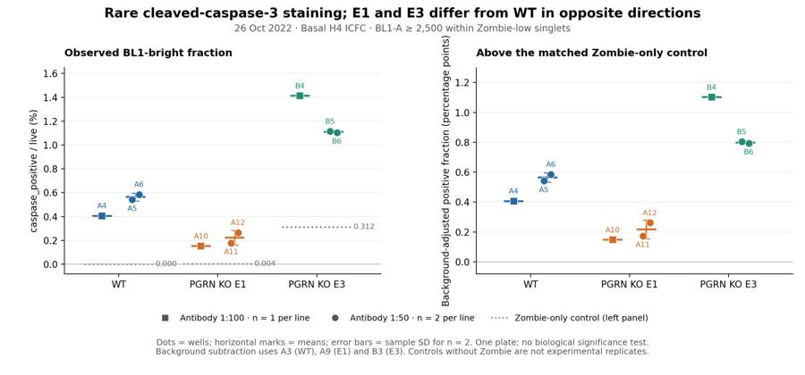
tool call · exec
text(await tools.apply_patch("*** Begin Patch\n*** Add File: /task/outputs/write_report.py\n+from pathlib import Path\n+import json\n+import pandas as pd\n+import numpy as np\n+\n+OUT=Path('/task/outputs')\n+m=pd.read_csv(OUT/'per_well_metrics.csv').set_index('well')\n+s=pd.read_csv(OUT/'condition_summary.csv').set_index('condition')\n+flags=pd.read_csv(OUT/'flags.csv')\n+sens=pd.read_csv(OUT/'sensitivity_summary.csv')\n+settings=json.loads((OUT/'analysis_settings.json').read_text())\n+\n+def comparison(a,b,title):\n+ av=float(s.loc[a,'mean']);bv=float(s.loc[b,'mean']);delta=bv-av\n+ return dict(comparison=title,a=a,b=b,direction='increase' if delta>0 else 'decrease' if delta<0 else 'no_clear_change',\n+ magnitude=f'{av:.4f} to {bv:.4f} background-adjusted percentage points; b - a = {delta:+.4f} percentage points. Descriptive, single-plate comparison.',\n+ confidence='low')\n+\n+question=('Can this fixed/permeabilized H4 flow-cytometry run detect cleaved caspase-3 as a practical proxy for the plan\\'s caspase-3 activity objective, '\n+ 'and what do WT versus PGRN-KO E1/E3 and antibody 1:100 versus 1:50 show?')\n+answer=dict(\n+ question=question,\n+ comparisons=[\n+ comparison('WT_1_100','E1_1_100','WT to PGRN KO E1, antibody 1:100'),\n+ comparison('WT_1_100','E3_1_100','WT to PGRN KO E3, antibody 1:100'),\n+ comparison('WT_1_50','E1_1_50','WT to PGRN KO E1, antibody 1:50'),\n+ comparison('WT_1_50','E3_1_50','WT to PGRN KO E3, antibody 1:50'),\n+ comparison('WT_1_100','WT_1_50','WT, doubling antibody concentration from 1:100 to 1:50'),\n+ comparison('E1_1_100','E1_1_50','E1, doubling antibody concentration from 1:100 to 1:50'),\n+ comparison('E3_1_100','E3_1_50','E3, doubling antibody concentration from 1:100 to 1:50')],\n+ overall_answer=('partial: the run detects rare antibody-associated BL1-bright cells above matched background, compatible with cleaved caspase-3 staining. '\n+ 'It does not validate caspase enzymatic activity or assay dynamic range. E1 is below WT and E3 above WT at both dilutions; '\n+ 'a consistent PGRN-loss increase and a universally better antibody dilution are not established.'),\n+ assay_verdict='needs_optimisation',\n+ next_action='repeat_with_change',\n+ next_change=dict(\n+ what='Add an apoptosis-induction positive-control arm to the H4 assay-validation run',\n+ **{'from':'Basal H4 cultures after overnight growth; no inducer dose or treatment is recorded for this plate',\n+ 'to':'WT H4 vehicle controls plus a 10 micromolar camptothecin pilot sampled at 3 and 6 hours, stained at both final antibody dilutions 1:100 and 1:50; verify induction independently',\n+ 'why':'An induced positive control is needed to distinguish low basal cleavage from poor antibody/protocol sensitivity, validate separation from background, and select antibody dilution. This pilot is literature-informed, not a validated regimen for these H4 lines.'}),\n+ excluded_wells=flags.loc[flags.decision=='exclude','well'].tolist(),\n+ caveats=[\n+ 'The run uses CST #9669 cleaved-caspase-3 AF488 antibody, not the CellEvent substrate assay; staining is a cleavage-associated proxy, not an enzymatic activity rate.',\n+ 'No induced apoptosis control, caspase-specificity control, concentration-matched isotype control, or killed-cell viability control is documented.',\n+ 'One plate only: one fully stained well per line at 1:100 and two at 1:50. Technical wells and events do not establish biological replication.',\n+ 'E3 has higher autofluorescence/background; matched Zombie-only FMO subtraction is required for the chosen comparison but does not remove nonspecific antibody binding.',\n+ 'E3 has 2.73-3.68% FSC-A and 3.30-3.98% SSC-A saturation. The common scatter gate removes that tail, restricting conclusions to retained cells.',\n+ 'A2 contains only 2497 singlets and 17 BL1-bright events; retain as a qualitative single-stain control, not a fully stained replicate.',\n+ 'Zombie-low is an operational live gate; no-Zombie controls cannot establish viability. Live-only analysis and discarded culture supernatant can undercount late apoptotic or detached cells.',\n+ 'FMO subtraction uses one control well per line; SD across the two sample wells omits uncertainty in that shared control. Zero observed WT FMO positives do not prove zero background.',\n+ 'Magnitude depends on gate choice; tested shared thresholds preserve the E1-below-WT and E3-above-WT directions, but not an absolute assay calibration.',\n+ 'The proposed camptothecin starting point is extrapolated from a study of serum-synchronized H4-APP cells and must be verified in these H4 cultures.'\n+ ])\n+(OUT/'answer.json').write_text(json.dumps(answer,indent=2,ensure_ascii=False)+'\\n')\n+\n+table=[]\n+for line in ['WT','E1','E3']:\n+ for dil in ['1_100','1_50']:\n+ name=f'{line}_{dil}';row=s.loc[name];wells=row.wells.split(';')\n+ raw=m.loc[wells,'raw_pct'].mean()\n+ display=f'{row[\"mean\"]:.3f}' if row.n_wells_used==1 else f'{row[\"mean\"]:.3f} ± {row.sd:.3f}'\n+ table.append(f'| {line} | {dil.replace(\"_\", \":\")} | {\", \".join(wells)} | {int(row.n_wells_used)} | {raw:.3f}% | {display} |')\n+results_table='\\n'.join(table)\n+\n+control_table=[]\n+for line,w in settings['FMO_wells'].items():\n+ a=m.loc[w]\n+ control_table.append(f'| {line} | {w} | {int(a.caspase_positive):,} / {int(a.live):,} | {a.raw_pct:.4f}% | {a.live_BL1_q995:.1f} |')\n+\n+perwell_table=[]\n+for wells in settings['groups'].values():\n+ for w in wells:\n+ a=m.loc[w]\n+ perwell_table.append(f'| {w} | {int(a.live):,} | {int(a.caspase_positive):,} | {a.raw_pct:.3f}% | {a.excess_percentage_points:.3f} |')\n+\n+report=f'''## Question\n+\n+Can this H4 intracellular flow-cytom
… [14,207 more characters not shown]tool output
Script completed
Wall time 0.4 seconds
Output:
{}
{"chunk_id":"f6e718","wall_time_seconds":0.000003831,"exit_code":0,"original_token_count":1116,"output":" condition wells n_wells_used mean sd metric_definition normalisation_applied\n WT_1_100 A4 1 0.406097 NaN 100 * caspase_positive / live (%); background-adjusted value in percentage points 100 * (caspase_positive(well)/live(well) - caspase_positive(A3)/live(A3))\n WT_1_50 A5;A6 2 0.563423 0.031169 100 * caspase_positive / live (%); background-adjusted value in percentage points 100 * (caspase_positive(well)/live(well) - caspase_positive(A3)/live(A3))\n E1_1_100 A10 1 0.147438 NaN 100 * caspase_positive / live (%); background-adjusted value in percentage points 100 * (caspase_positive(well)/live(well) - caspase_positive(A9)/live(A9))\n E1_1_50 A11;A12 2 0.217115 0.062161 100 * caspase_positive / live (%); background-adjusted value in percentage points 100 * (caspase_positive(well)/live(well) - caspase_positive(A9)/live(A9))\n E3_1_100 B4 1 1.101278 NaN 100 * caspase_positive / live (%); background-adjusted value in percentage points 100 * (caspase_positive(well)/live(well) - caspase_positive(B3)/live(B3))\n E3_1_50 B5;B6 2 0.798156 0.007194 100 * caspase_positive / live (%); background-adjusted value in percentage points 100 * (caspase_positive(well)/live(well) - caspase_positive(B3)/live(B3))\n WT_unstained A1 1 0.000000 NaN 100 * caspase_positive / live (% of events passing live gate; viability not inferred without Zombie) none\nWT_caspase_only_1_100 A2 1 0.680817 NaN 100 * caspase_positive / live (% of events passing live gate; viability not inferred without Zombie) none\n WT_Zombie_only_FMO A3 1 0.000000 NaN 100 * caspase_positive / live (% of events passing live gate; viability not inferred without Zombie) none\n E1_unstained A7 1 0.006278 NaN 100 * caspase_positive / live (% of events passing live gate; viability not inferred without Zombie) none\nE1_caspase_only_1_100 A8 1 0.142964 NaN 100 * caspase_positive / live (% of events passing live gate; viability not inferred without Zombie) none\n E1_Zombie_only_FMO A9 1 0.004425 NaN 100 * caspase_positive / live (% of events passing live gate; viability not inferred without Zombie) none\n E3_unstained B1 1 0.260981 NaN 100 * caspase_positive / live (% of events passing live gate; viability not inferred without Zombie) none\nE3_caspase_only_1_100 B2 1 1.432814 NaN 100 * caspase_positive / live (% of events passing live gate; viability not inferred without Zombie) none\n E3_Zombie_only_FMO B3 1 0.312197 NaN 100 * caspase_positive / live (% of events passing live gate; viability not inferred without Zombie) none\n\nSensitivity means in percentage points:\ncondition E1_1_100 E1_1_50 E3_1_100 E3_1_50 WT_1_100 WT_1_50\nvariant \nBL1_2000 0.1575 0.2299 1.1872 1.0243 0.4536 0.6046\nBL1_3000 0.1315 0.2032 0.9733 0.6785 0.3639 0.5313\nBL1_4000 0.1111 0.1783 0.8249 0.6122 0.2742 0.4719\nRL3_40000 0.1393 0.2144 1.0304 0.7611 0.4031 0.5444\nRL3_80000 0.1506 0.2175 1.1689 0.8186 0.4052 0.5619\nall_singlets 0.1531 0.2147 1.1760 0.8192 0.4009 0.5598\nprimary 0.1474 0.2171 1.1013 0.7982 0.4061 0.5634\n"}
{"chunk_id":"b43d35","wall_time_seconds":0.18393086,"exit_code":0,"original_token_count":8,"output":"Saved report.md and answer.json\n"}19
agent
The gate-sensitivity checks preserve the E1-below-WT and E3-above-WT pattern. I’ve retained all wells, with notes for A2’s low count and scatter saturation in the six E3 wells. The recommended next step is an induced-apoptosis control run to validate assay sensitivity and compare the antibody dilutions. I’m now checking that the saved gates reproduce every reported count.
tool call · exec
text(await tools.apply_patch("*** Begin Patch\n*** Add File: /task/outputs/validate_outputs.py\n+\"\"\"Independently reload saved gates and audit every requested deliverable.\"\"\"\n+from pathlib import Path\n+import json,re,hashlib\n+import numpy as np\n+import pandas as pd\n+import flowkit as fk\n+from xml.etree import ElementTree as ET\n+\n+ROOT=Path('/task');OUT=ROOT/'outputs'\n+layout=pd.read_csv(ROOT/'inputs/plate_layout.csv')\n+counts=pd.read_csv(OUT/'counts.csv',keep_default_na=False)\n+flags=pd.read_csv(OUT/'flags.csv',keep_default_na=False)\n+summary=pd.read_csv(OUT/'condition_summary.csv',keep_default_na=False)\n+answer=json.loads((OUT/'answer.json').read_text())\n+settings=json.loads((OUT/'analysis_settings.json').read_text())\n+assert list(counts.columns)==['file','well','population','role','parent','count','pct_of_parent']\n+assert list(flags.columns)==['file','well','issue_type','evidence','decision']\n+assert list(summary.columns)==['condition','wells','n_wells_used','mean','sd','metric_definition','normalisation_applied']\n+assert len(flags)==len(layout)==18\n+assert flags.file.nunique()==18\n+assert set(flags.file)==set(layout.file)==set(counts.file)\n+expected_wells=dict(zip(layout.file,layout.well))\n+assert all(expected_wells[r.file]==r.well for r in counts.itertuples())\n+assert all(expected_wells[r.file]==r.well for r in flags.itertuples())\n+assert not counts.duplicated(['file','population']).any()\n+populations=set(counts.population)\n+for file,group in counts.groupby('file'):\n+ assert set(group.population)==populations\n+assert len(counts)==18*len(populations)\n+assert counts['count'].map(lambda x:isinstance(x,(int,np.integer)) and x>=0).all()\n+assert set(counts.role)<={'cells','singlets','live','marker_positive','other'}\n+for role in ['cells','singlets','live','marker_positive']:\n+ assert counts.loc[counts.role==role,'population'].nunique()==1\n+ assert len(counts.loc[counts.role==role])==18\n+assert len(counts[['population','role','parent']].drop_duplicates())==len(populations)\n+\n+g=fk.parse_gating_xml(str(OUT/'gates.xml'))\n+gateids=g.get_gate_ids()\n+assert set(name for name,path in gateids)==populations-{'all_events'}\n+assert len(gateids)==len(populations)-1\n+for name,path in gateids:\n+ assert re.match(r'^[A-Za-z][A-Za-z0-9_]*$',name)\n+ parent=counts.loc[counts.population==name,'parent'].iloc[0]\n+ assert path[-1]==('root' if parent=='all_events' else parent)\n+for file,group in counts.groupby('file',sort=False):\n+ sample=fk.Sample(str(ROOT/'inputs/raw'/file))\n+ result=g.gate_sample(sample)\n+ lookup=group.set_index('population')['count'].to_dict()\n+ for row in group.itertuples():\n+ if row.population=='all_events':\n+ assert row.role=='other' and row.parent=='none' and row.pct_of_parent==''\n+ assert row.count==sample.event_count\n+ else:\n+ assert row.count==result.get_gate_count(row.population),(row.well,row.population)\n+ parent_count=lookup[row.parent]\n+ assert row.count<=parent_count\n+ if parent_count:\n+ assert np.isclose(float(row.pct_of_parent),100*row.count/parent_count,rtol=1e-12,atol=1e-12)\n+ else:assert row.pct_of_parent==''\n+ if row.parent!='all_events':\n+ assert np.all(~result.get_gate_membership(row.population)|result.get_gate_membership(row.parent))\n+\n+assert set(flags.issue_type)<={'none','clog','ran_dry','too_few_events','saturation','bad_control','mislabel','other'}\n+assert set(flags.decision)<={'keep','keep_with_note','exclude'}\n+for r in flags.itertuples():\n+ if r.issue_type=='none':assert r.decision=='keep'\n+ else:assert r.evidence and re.search(r'\\d',r.evidence)\n+excluded=flags.loc[flags.decision=='exclude','well'].tolist()\n+assert sorted(answer['excluded_wells'])==sorted(excluded)\n+assert summary.condition.is_unique\n+n=counts.pivot(index='well',columns='population',values='count')\n+p=100*n['caspase_positive']/n['live']\n+for r in summary.itertuples():\n+ wells=r.wells.split(';') if r.wells else []\n+ assert len(wells)==r.n_wells_used and len(wells)==len(set(wells))\n+ assert set(wells)<=set(layout.well)-set(excluded)\n+ values=p.loc[wells].values\n+ if r.normalisation_applied!='none':\n+ fmo=settings['FMO_wells'][r.condition.split('_')[0]]\n+ assert f'caspase_positive({fmo})/live({fmo})' in r.normalisation_applied\n+ values=values-p[fmo]\n+ assert np.isclose(r.mean,np.mean(values),rtol=1e-12,atol=1e-12)\n+ if len(wells)==1:assert r.sd==''\n+ else:assert np.isclose(float(r.sd),np.std(values,ddof=1),rtol=1e-12,atol=1e-12)\n+assert len(answer['comparisons'])>0\n+for c in answer['comparisons']:\n+ assert c['a'] in set(summary.condition) and c['b'] in set(summary.condition)\n+ assert c['direction'] in ['increase','decrease','no_clear_change']\n+ assert c['confidence'] in ['high','medium','low']\n+assert answer['overall_answer'].startswith(('yes:','partial:','no:'))\n+assert answer['assay_verdict'] in ['fit_for_purpose','needs_optimisation','not_fit_for_purpose']\n+assert answer['next_action'] in ['proceed_as_planned','repeat_unchanged','repeat_with_change','optimise_reagent_or_setting','change_treatment_or_timing','switch_assay','stop']\n+assert set(answer['next_change'])=={'what','from','to','why'}\n+assert all(isinstance(v,str) for v in answer['next_change'].values())\n+headings=re.findall(r'^## (.+)$',(OUT/'report.md').read_text(),flags=re.M)\n+assert headings==['Question','Methods','Results','Conclusion','Caveats','Recommendation']\n+assert (OUT/'figure.png').read_bytes().startswith(b'\\x89PNG\\r\\n\\x1a\\n')\n+tree=ET.parse(OUT/'gates.xml')\n+ns={'g':'http://www.isac-net.org/std/Gating-ML/v2.0/gating'}\n+dimensions=tree.findall('.//g:dimension',ns)\n+assert dimensions\n+assert all(d.attrib['{'+ns['g']+'}compensation-ref']=='uncompensated' for d in dimensions)\n+for name,expected in set
… [1,131 more characters not shown]tool output
Script completed Wall time 1.2 seconds Output:
{}{"chunk_id":"51585c","wall_time_seconds":1.000670523,"session_id":14513,"original_token_count":0,"output":""}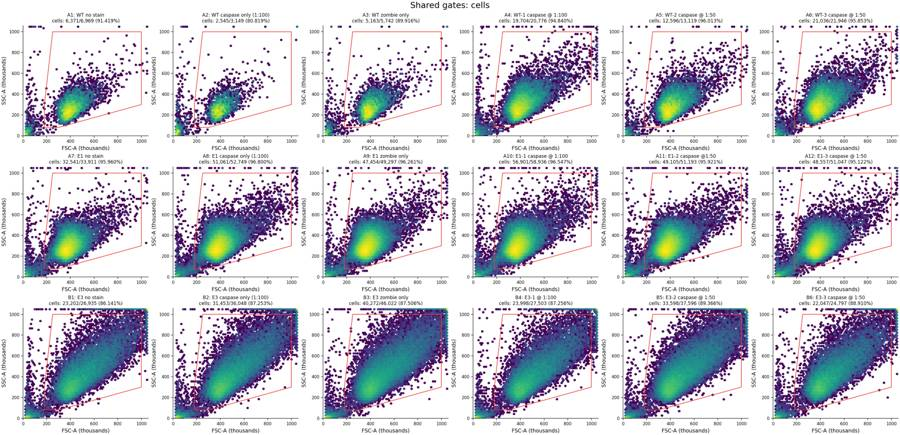
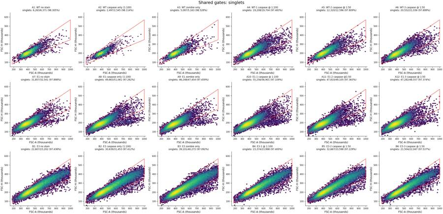
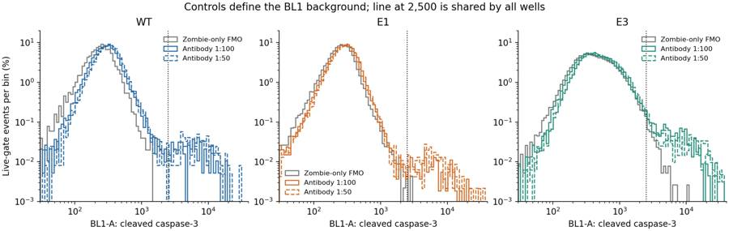
tool call · exec
text(await tools.write_stdin({session_id:14513,chars:"","yield_time_ms":1000,"max_output_tokens":4000}));
text(await tools.exec_command({cmd:"python - <<'PY'\nfrom pathlib import Path\np=Path('/task/outputs')\nfor name in ['exploration_singlet_fluorescence.png','exploration_live_BL1.png','exploration_singlet_RL3.png','exploration_width.png','gated_diagnostics.csv','qc_exploration.csv']:\n f=p/name\n if f.exists(): f.unlink()\nprint('Removed superseded exploratory gated outputs; final gate atlases and reproducible tables retained.')\nprint((p/'report.md').read_text()[:2800])\nprint('Required deliverable sizes:')\nfor name in ['gates.xml','counts.csv','flags.csv','condition_summary.csv','figure.png','report.md','answer.json']:\n print(name,(p/name).stat().st_size)\nPY","max_output_tokens":4000}));
image((await tools.view_image({path:"/task/outputs/gate_atlas_fluorescence.png"})).image_url);
tool output
Script completed Wall time 0.1 seconds Output:
{"chunk_id":"727851","wall_time_seconds":0.000004335,"exit_code":0,"original_token_count":103,"output":"{\n \"status\": \"PASS\",\n \"flowkit_version\": \"1.2.3\",\n \"files_reapplied\": 18,\n \"populations_per_file\": 19,\n \"counts_verified\": 342,\n \"gates\": 18,\n \"conditions_verified\": 15,\n \"excluded_wells\": [],\n \"all_parent_percentages_verified\": true,\n \"input_hashes_unchanged\": true,\n \"gatingml_roundtrip\": true,\n \"note\": \"All counts independently reproduced from the exported gates and original full FCS data.\"\n}\n"}{"chunk_id":"899f80","wall_time_seconds":0.000004276,"exit_code":0,"original_token_count":767,"output":"Removed superseded exploratory gated outputs; final gate atlases and reproducible tables retained.\n## Question\n\nCan this H4 intracellular flow-cytometry assay detect cleaved caspase-3 sufficiently well to support the plan's aim of measuring caspase-3 activity, before transfer to iPSC-derived neurons? The plate also permits descriptive comparisons of WT with PGRN-KO E1 and E3, separately at antibody 1:100 and 1:50.\n\n**Answer: partial.** There is a rare antibody-associated BL1-bright tail above background. E1 is below WT and E3 above WT; neither a general PGRN-KO increase nor a universally better antibody dilution is demonstrated. The assay needs validation with induced apoptosis before it can support neuronal rescue experiments. This run measures a cleavage-associated antigen, not catalytic activity.\n\n## Methods\n\nAll 18 original FCS files were loaded with `flowkit.Sample` and analyzed on their full event data using FlowKit 1.2.3. File names, wells and sample identities come from `plate_layout.csv`; the FCS well IDs agree. All files were acquired on 26-Oct-2022. Raw inputs were not modified; their SHA-256 hashes are in `analysis_settings.json`. `make_deliverables.py` builds one strategy for every well, exports it with `flowkit.export_gatingml`, reloads it with `flowkit.parse_gating_xml`, and obtains every population count from `gate_sample`. The retained event counts, rather than plotting subsamples, determine all results.\n\nThe actual procedure uses **CST #9669 cleaved-caspase-3–Alexa Fluor 488 in BL1-A**, at BL1 voltage 250, and **Zombie NIR in RL3-A**, at RL3 voltage 350. FSC and SSC voltages are 20 and 290. The FCS BL1 text label “AAV-GFP-GFP-A” is stale; there is no GFP measurement in this protocol. Detector IDs, not those text labels, define the gates. CellEvent and camptothecin occur in the entry's materials list, but the acquisition protocol records neither CellEvent substrate use nor an apoptosis-inducing treatment. The antibody recognizes a cleaved fragment of caspase-3; its manufacturer describes fixed/permeabilized flow use. [CST #9669 product information](https://www.cellsignal.com/products/antibody-conjugates/cleaved-caspase-3-asp175-antibody-alexa-fluor-488-conjugate/9669)\n\nAll dimensions explicitly use `compensation_ref=\"uncompensated\"`. Every FCS spillover matrix is the same identity matrix. Within the live gate, BL1 medians in unstained versus Zombie-only controls are 253 versus 244 (WT), 263 versus 256 (E1), and 399 versus 392 (E3); thus Zombie staining does not create a median BL1 increase. The controls do not justify fitting a nonzero compensation matrix. This is a practical uncompensated analysis, not a validation of spillover under strongly induced apoptosis.\n\nThe main hierarchy is `all_events → cells → singlets → live → caspase_positive`. All gates use **raw coordinates**. The asinh(x/150) scale used in fluorescence plots is o\nRequired deliverable sizes:\ngates.xml 6733\ncounts.csv 36013\nflags.csv 3269\ncondition_summary.csv 2605\nfigure.png 212834\nreport.md 14462\nanswer.json 5407\n"}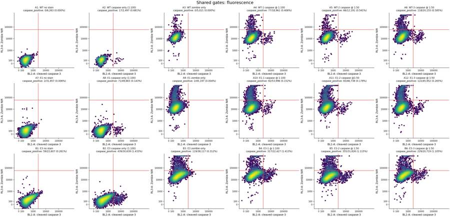
21
agent
**Partial success:** rare antibody-associated staining is detectable, but E1 is below WT and E3 above WT. A consistent PGRN-knockout increase is not established.
**Next step:** repeat with an induced-apoptosis positive control to validate sensitivity and compare antibody dilutions.
All seven deliverables are saved in `/task/outputs/`. Exported gates reproduce all **342 counts** across 18 files. No wells were excluded; QC limitations are documented.
[Report](/task/outputs/report.md) · [Figure](/task/outputs/figure.png) · [Structured answer](/task/outputs/answer.json)